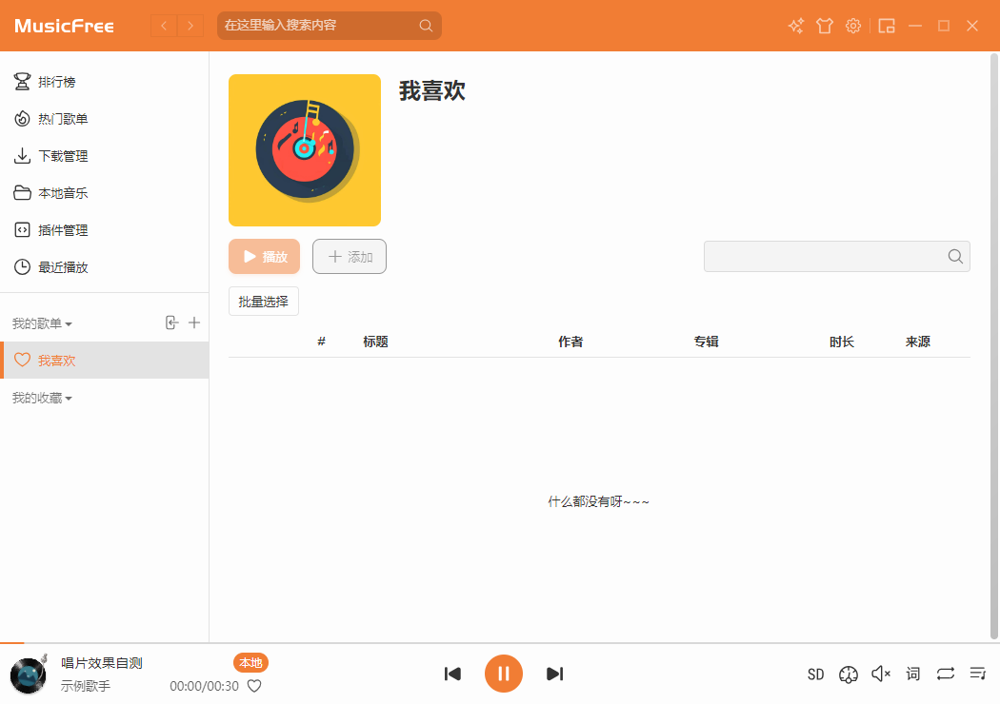
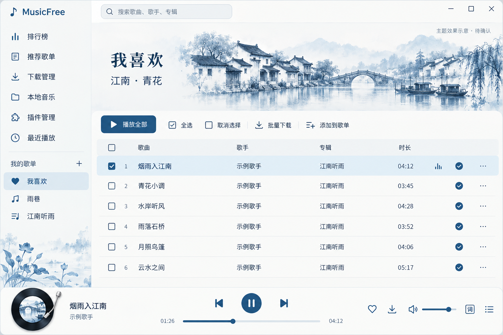
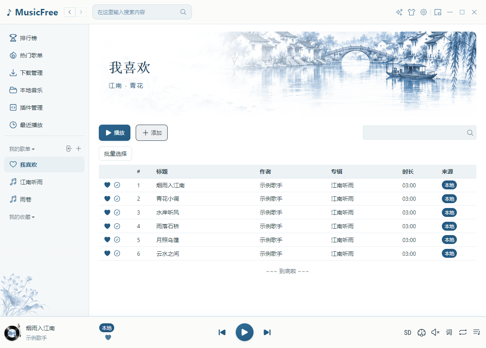
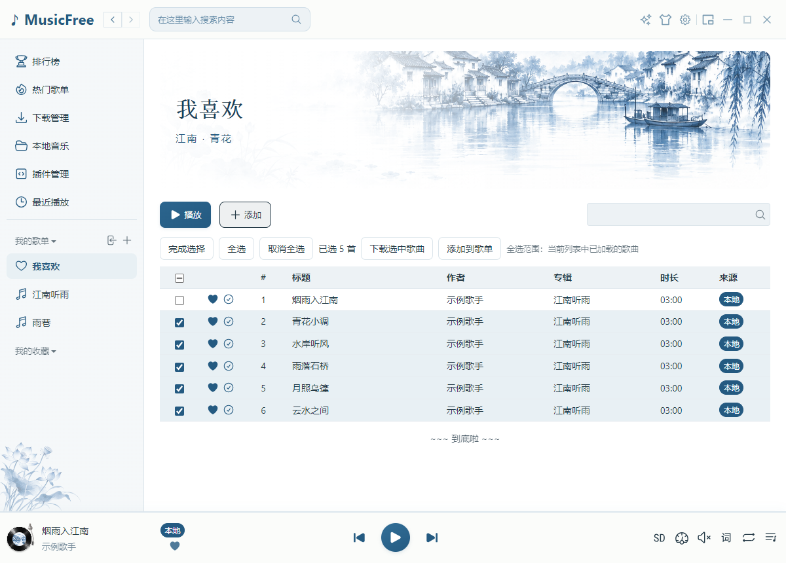
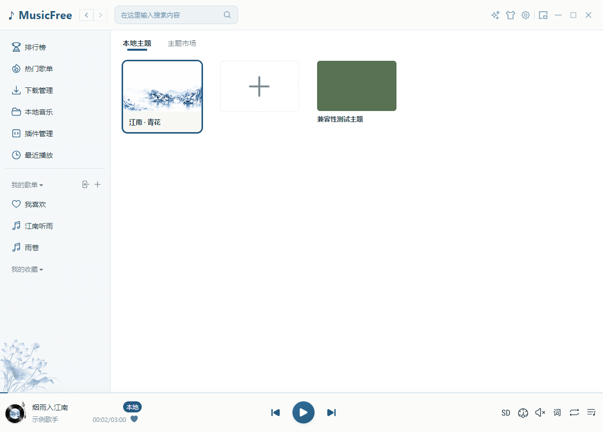
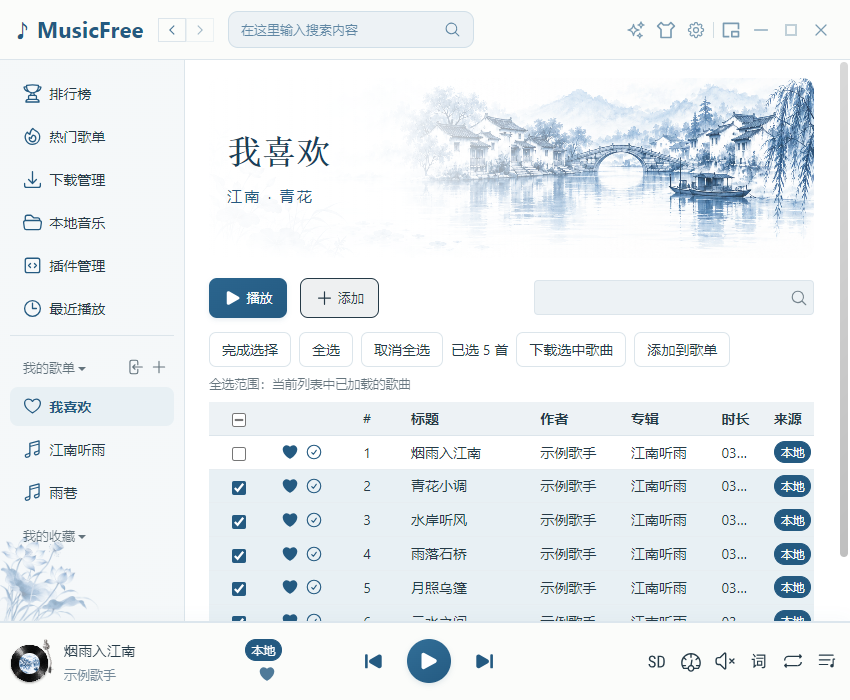
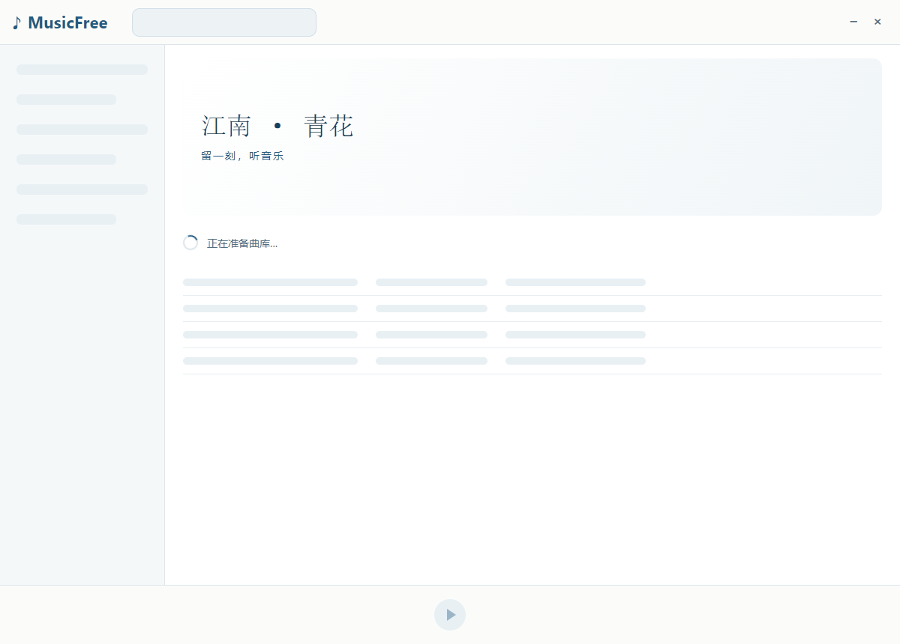

MusicFreeDesktop 知识库与优化评估
历史审阅：6bb1e21（等价整理版 5c2d332）· 第一阶段修复：5806cdf · 本轮基线：dev@4e7b711 ；本轮实现按下载同步、播放恢复、启动优化和唱片效果分别提交 · 更新：2026-10-05。
阅读入口
以 Markdown 文档为主，架构、状态和时序使用可编辑的 Mermaid 或 PlantUML 定义。离线阅读页 显示流程图，支持章节切换、搜索和打印；每张图下方可展开对应源码。Mermaid 在网页中渲染；第 10 章的 PlantUML 使用本地预生成 SVG，并提供“打开大图”。也可在支持 Mermaid 的 Markdown 预览中阅读原稿。
直接用浏览器打开 index.html，不需要安装浏览器扩展、Java、PlantUML、Mermaid CLI 或启动服务器。渲染库已保存在 vendor/mermaid，PlantUML 图形保存在 assets/plantuml；复制文档时请保留整个 knowledge-base 目录，离线也能显示图形。
当前主题实现： 13 青花主题实际预览 。青花主题已从独立 worktree 合入 dev，并补修启动白屏、首帧主题和标题裁切；12 保留开发前效果图。
双行歌词实现： 14 双行歌词 。已在独立 worktree 开发，并 rebase 到 dev@01ec74f 后合入 dev；第 14 章展示编译版实际截图、流程图和验证。
主要结论
仓库是跨平台项目。 README、构建工作流和平台分支均支持这一判断；当前 Windows 构建不代表整个仓库只支持 Windows。第一阶段不做架构重构。 在现有模块内修复播放竞态、扫描、服务生命周期和资源释放，补充回归与性能基线。继续使用 TypeScript、React、Electron 与当前数据库。 第一阶段不拆进程、不迁移数据库、不换语言；接口的必要小修以具体问题为边界。架构与语言选型留作后续备选。 C/C++ 可用于未来有明确需求的原生音频/系统模块；Windows 专用 UI、Tauri 和其他方案均需单独验证收益与兼容成本，尚未决定采用。第一阶段 BUG-01～13 已修复，并补修短损坏文件的 BUG-14。 已通过 Windows Node 回归、真实 Electron 音频/歌单/启动/下载验证及类型检查。仍需保留设备、音源、Linux/macOS 验收和安全迁移的边界，详见 04 的状态表 。本轮已实现下载文件状态同步。 外部删歌、目录删除/恢复、修改下载目录、暂不可用和实际打开失败均有核对或恢复路径；任务进度与资源可用性分别维护。实现、状态机和验证统一收录在 10 。本轮已优化启动等待。 下载文件核对在后台分批执行，点播和下载优先检查目标；唱片效果保留。流程、测量与边界见 02 。最新提交审查： 08 以 master..dev@4e7b711 的 Brraida 提交为范围，列出 3 项 P1 数据风险和 2 项 P2 功能问题；07 给出适合本仓库的提交规范，09 记录验证过程。04 是较早基线的代码审查，问题编号和范围分别保留。
正在渲染流程图…
查看 Mermaid 源码 flowchart LR
Start["想快速了解"] --> Map["01：模块与平台"] --> Flow["02：调用流程"]
Flow --> Current["10：当前文件同步实现与验证"]
Start --> Audit["04 / 08 / 09：历史审查与证据"]
Start --> Future["03 / 05 / 06：体验、架构与后续路线"]
Start --> Commit["07：提交规范"]启用 JavaScript 后可以查看流程图；也可展开上面的 Mermaid 源码。 图定义与证据说明
Mermaid 定义直接保存在 Markdown 中，便于随源码修改；视觉方案与实际截图保存在 assets/previews，正文区分开发前示意与当前实现。 网页使用随文档保存的 Mermaid 库渲染 SVG；隐藏章节通过独立测量容器完成布局，切换章节无需重新绘图。渲染失败会保留错误与源码，不显示为空白。 第 10 章的两份 PlantUML 源码保存在 docs/design/download-file-state，本地生成 SVG 后嵌入网页。生成器检查源码和 SVG 校验值，避免图与源码不同步；详见 图维护步骤 。 历史复现脚本 通过 git show 加载原基线 TypeScript 方法，模拟音频、子进程和数据库边界；历史结果 记录基线和环境。当前回归方法 和 第一阶段验证结果 覆盖修复后的行为。本轮未测量完整播放器性能，也未把隔离实验视为全设备实机测试。下载文件同步结果 记录本轮门禁；Windows 执行完整回归，WSL Linux 执行文件检查与原生监听回归，macOS 尚未运行验收。唱片效果结果 记录后续的 7 组 Windows Electron 门禁与编译页面验收，第 11 章展示实际截图。评估口径
标签 含义 隔离复现 实际源码在明确的模拟条件下出现问题，有脚本和断言 静态确认 源码路径或缺失行为可确认，尚未完成端到端复现 待实测 影响程度、设备相关表现或异常时序需实际验证 建议 新功能、架构方案或性能目标，尚未实现 已完成 已在基线中实现，并有此前的测试或用户验证
优先级：P0 为发布前应处理的高影响边界；P1 为播放、数据和任务可靠性；P2 为日常体验与可维护性；P3 为有需求后再做的能力。优先级是本次建议，不是测得的事故频率。
基线与维护方式
当前版本为 0.0.80；本轮保留此前确认的版本号，并同步 package-lock.json 的两处根版本字段，依赖图未变化。开发前基线 4e7b711 的版本为 0.0.8。 当前扫描 src：463 个文件，其中 162 个 .ts、121 个 .tsx、105 个 .scss。数量只说明规模，不说明质量。 竞品与框架能力依据官方资料，在对应段落给出链接。官网宣称的内存数字未用于横向性能结论。 后续修复时更新问题状态、证据和基线；同一问题编号保持稳定。性能结果须同时注明机器、操作系统、数据规模和测量方法。 修改 Markdown 或 Mermaid 定义后，可在仓库根目录重新生成离线阅读页：
07、08、09 的 Markdown 是入口页，正文只维护一份：原稿分别在仓库根目录的 COMMIT_CONVENTION.md、CODE_REVIEW_2026-10-04.md 和 docs/reviews/2026-10-04/README.md。生成器直接读取原稿并转换相对链接，避免复制正文后漏同步。历史审查保留当时结论；当前文件同步统一维护第 10 章。
python docs/knowledge-base/evidence/build-docs.py生成器仅依赖 Python 3 标准库。历史复现脚本需要 npm 依赖和保留的基线 Git 对象，会更新 evidence/audit-results.json；当前修复验收请运行 scripts/tests 下的回归。
网页流程图回归
已有 Windows Electron 依赖时，在仓库根目录运行：
.\node_modules\.bin\electron.cmd docs/knowledge-base/evidence/browser-render-test.cjs测试使用独立 profile，以 file:// 加载真实阅读页并阻止 HTTP(S) 请求；检查 15 张图（13 张 Mermaid、2 张 PlantUML）的 SVG、尺寸和标签、章节切换、窄屏、打印、源码展开、大图链接，以及单图失败时其他图继续渲染。结果 记录实际浏览器版本，截图路径位于忽略提交的 out 目录。
渲染库的版本、许可证和校验值见 vendor 说明 。
推荐阅读顺序： 01 的执行模型与平台矩阵 → 02 的调用流程 → 10 的当前实现与验证。查历史风险再看 04、08、09；规划后续工作看 03、05、06；提交前看 07。
01 · 代码库知识地图
返回目录
1. 软件定位与平台
MusicFreeDesktop 是以插件提供在线音源、以本地存储保存个人歌单的桌面播放器。它具备本地音乐、搜索、歌单、歌词、桌面歌词、迷你窗口、主题、备份和下载能力。在线功能取决于已安装插件的方法和返回数据，不应把播放器 UI 有入口等同于任意插件都支持它。
代码以 Electron + TypeScript + React + SCSS 为主。README 明确说明 Windows、macOS、Linux；构建工作流 包含 Windows、macOS x64/ARM64 和 Ubuntu 作业，Forge 配置 包含相应打包器。这是代码和构建意图；本次没有验证 macOS、Linux 当前构建能否成功。
平台支持矩阵
平台 仓库声明与构建配置 平台适配证据 本轮验证程度 Windows 普通与 legacy 构建作业；安装器和便携 ZIP，产物命名为 x64 main 的 portable 分支；任务栏缩略图与原生 .node 模块 文件同步阶段 8 组 Node 通过；加入唱片效果后 7 组 Electron、编译页面验收通过；并非全功能验证 macOS x64 与 arm64 作业；DMG，Forge 另配置 ZIP main 的 darwin 生命周期、窗口与托盘分支 已审查配置和源码，未在 Mac 上重新构建/运行 Linux Ubuntu 作业；amd64 DEB；RPM maker 未启用 tray-manager 的 linux 分支 WSL Linux 文件检查与真实目录监听回归通过；未重新构建/运行 Linux GUI
结论：代码库设计支持 Linux、Windows、macOS。 这不等于当前 CI 都能成功或每个平台功能完全一致。Linux 现有打包路径主要面向 Debian/Ubuntu 系列；本轮不据此承诺所有发行版、桌面环境或 Wayland/X11 组合。Windows ARM64、Linux ARM64 也不在当前列出的构建矩阵中。
证据：README 、构建作业 、Forge 、平台入口 、托盘适配 、任务栏模块加载 。Windows 原生缩略图模块在调用前检查 win32，不能因为它存在就推断其他平台无法运行。
2. 技术栈与职责
层 当前技术 承担的职责 桌面宿主 Electron，依赖声明 ^25.3.0 窗口、托盘、快捷键、协议、任务栏、文件系统与进程 界面 React，依赖声明 ^18.3.1；React Router 页面、歌曲表格、弹窗、歌词、状态展示 播放 HTMLAudioElement + hls.js普通音频与 HLS 播放，设备选择、音量、倍速 状态 自定义 Store + EventEmitter 业务状态更新、组件订阅、下载状态通知 多窗口通信 IPC + MessagePort 主窗口、歌词窗口、迷你窗口的命令与状态同步 当前业务存储 Dexie / IndexedDB、localStorage、JSON 歌单、歌曲、下载元数据、偏好与设置 后台任务 Web Worker + Comlink；子进程 下载、目录扫描、请求转发 构建 Electron Forge + Webpack + 原生模块重建 平台包与资源处理
依赖版本范围来自 package.json ，不等于安装时必然解析到的精确版本。需要升级的是受支持的 Electron 版本及相关兼容性；不能单独改版本号后直接发布。
3. 进程与模块地图
正在渲染流程图…
查看 Mermaid 源码 flowchart TB
subgraph Main["Electron 主进程"]
Host["应用 / 窗口 / 托盘 / 快捷键"]
Plugin["JS 插件执行与系统桥接"]
end
subgraph Renderer["主窗口渲染进程"]
UI["React 页面与 MusicList"]
Core["TrackPlayer / 下载队列 / 本地音乐"]
DB["Dexie / IndexedDB / localStorage"]
Audio["HTMLAudio / hls.js"]
UI --> Core
Core --> DB
Core --> Audio
end
Host <-->|IPC / MessagePort| UI
Core -->|插件委托| Plugin
Core -->|Comlink| Download["下载 Web Worker：网络与文件写入"]
Scan["扫描 Web Worker：chokidar / metadata"] -->|Comlink 回调| Core
Audio -->|HTTP| Forward["请求转发子进程"]
Host -->|服务管理器启动| Forward启用 JavaScript 后可以查看流程图；也可展开上面的 Mermaid 源码。 图中的后台区域同时包含 Worker 和请求转发子进程，它们不是同一种进程。图中省略 Chromium 自己的 GPU、网络和音频服务进程。
用 C/C++ 与嵌入式经验理解执行模型
本项目概念 可以借用的经验 必须区分的地方 主进程 / Renderer 系统宿主与界面进程，边界通过消息通信 src/main 是 JS 运行环境，业务并非全在这里；Electron 还有内部服务进程Web Worker 将工作提交到独立执行上下文，接收消息结果 不是共享全部对象的 C++ 线程；Comlink 代理调用返回 Promise，跨边界的数据有复制/传输约束 Promise / async / await 异步 I/O 完成回调、状态机的挂起与恢复 await 不等于创建线程；它让出当前异步函数，之后继续执行，结果可能已过时Store / EventEmitter 状态容器与观察者回调 Store 已提交后通知并隔离订阅错误（BUG-09）；其他 EventEmitter 回调仍需自行处理异常 React state 状态变化驱动界面刷新 界面渲染与设备时钟不是同一个时钟；不能用渲染频率代替音频播放进度 资源生命周期 RAII、句柄所有权、退出清理 TS/JS 的 GC 不自动完成 destroy、取消请求、释放 Object URL 或移除监听器 TypeScript interface 编译期接口约束 编译后没有自动运行时校验；插件返回值和 IPC 输入仍需检查
因此，阅读播放/下载代码时先标记谁拥有状态、谁提交结果、谁负责取消和释放 。单个 JS 执行上下文通常顺序执行回调，多个异步请求仍可乱序完成；BUG-01/02 属于这种竞态，而非一定存在两个线程同时写内存。
主进程
src/main/index.ts 建立便携目录、单实例锁和 musicfree:// 协议，初始化设置、插件、托盘、快捷键、服务和窗口。
window-manager 负责三类窗口及其关闭、大小、拖动等行为。主窗口关闭后的结果由设置和平台分支共同决定；托盘隐藏不等于程序退出。
主界面与业务核心
renderer/document/index.tsx 先等待 bootstrap，再挂载 React。业务集中在 src/renderer/core：播放、歌单、本地音乐、下载、最近播放、歌词关联和备份。
当前播放核心和下载队列都由主窗口渲染侧管理。音频解码不是所有工作都在 JavaScript UI 线程执行，但播放命令、事件处理和状态组织依赖此渲染进程。后续应测量 UI 卡顿是否影响控制延迟，不能直接断言每次卡顿都会断音。
插件与系统边界
插件委托调用经过 renderer / preload / main；plugin.ts 使用 Function 执行 JavaScript 插件，并提供 axios、cheerio 等预置包。白名单 require 属于兼容接口，不能视为操作系统沙箱。
src/shared 的 main、preload、renderer 文件是按进程分拆的桥接和实现。阅读时应追踪具体调用，不宜仅按文件夹名称假定所有 shared 模块都在同一进程。
4. 数据到底存在哪里？
正在渲染流程图…
查看 Mermaid 源码 flowchart LR
Core["歌曲 / 歌单 / 下载业务"] --> Sheets["musicSheetDB.sheets：歌单与歌曲键"]
Core --> Tracks["musicSheetDB.musicStore：详情与下载元数据"]
Core --> Local["musicSheetDB.localMusicStore：扫描结果"]
Core --> Prefs["userPerferenceDB.perference：索引与大型偏好"]
Core --> Small["localStorage：小型播放偏好"]
Main["AppConfig 主进程"] --> Config["userData/config.json"]
Worker["下载 Worker"] --> Files["临时 part / 完整音频文件"]
Files -.->|路径与音质关联| Tracks
Tracks -.->|已下载索引可重建| Prefs启用 JavaScript 后可以查看流程图；也可展开上面的 Mermaid 源码。 IndexedDB 的物理文件属于 Electron 浏览器 profile；迁移时应通过业务导出/导入，避免直接把数据库底层文件当成稳定交换格式。
歌曲的身份由来源 platform 和 id 确定；media-util 统一比较和生成键。列表位置会因排序、过滤和分页改变，不能作为持久身份。
SQLite 代码与当前主链路的区别
仓库有 shared/database/preload.ts 、preload-backup.ts 和 db-worker.ts 等 SQLite 代码，但当前 preload 入口未导入上述数据库模块，主歌单入口走 Dexie。db-worker.ts 还有空数据库路径。它们应先做依赖和迁移核查，不能据此描述当前歌单已统一使用 SQLite。
特别注意：music-sheet/frontend/index.ts 仍然 export * from './index.old'。文件名带 old 不意味着可以删除。 同样，备用下载实现需要核实导入关系后再归档。
5. 源码导航：需求落点
6. 已有优势与应保留的设计
在线音源通过插件协议解耦，UI 和音源可以分别演进。 歌曲身份已有统一帮助函数，便于去重与稳定选择。 本地扫描和下载已有后台 Worker，适合继续引入批处理和限流。 主窗口、歌词窗口和迷你模式已有消息通信基础。 列表已虚拟化；应优化计算和订阅，不应简单改回全量 DOM。 本次基线已修复下载提交后的状态一致性，并补有实际 Windows Electron 回归测试。 7. 术语速查
术语 在本项目里的含义 Renderer React 界面及目前大部分业务所在的 Electron 渲染进程 Preload / IPC 连接界面与系统能力的边界代码/通信 Comlink 把 Worker 消息包装成类似异步函数调用 Dexie IndexedDB 的访问库 HLS / m3u8 播放清单引用多个媒体分片，清单本身不等于完整音频 SMTC Windows 的系统媒体播放控制；不是任务栏缩略图按钮 WASAPI Windows 音频输出接口；共享和独占是不同模式 Gapless 正确消除曲目衔接中的非音乐空隙，与交叉淡化不同
02 · 核心流程与 Windows 开发指南
返回目录
1. 启动顺序
src/main/index.ts 识别 Windows 便携目录，申请单实例锁。app.whenReady() 初始化全局路径、设置、语言、插件、托盘、快捷键和消息总线，创建暂时隐藏的主窗口；青花 HTML 首帧完成后再显示窗口。renderer/document/startup.js 先让本地青花骨架绘制，再动态加载完整播放器。renderer/document/bootstrap.ts 先初始化设置/插件，再初始化歌单/播放器，随后建立扫描、下载记录索引、最近播放和服务状态。下载文件核对与旧记录 SHA-256 补建在后台分批执行。renderer/document/index.tsx 先挂载 React 的 Initialize 界面；bootstrap 成功后挂载播放器，失败则显示阶段与错误，提供整页重载重试。主窗口通过 IPC/MessagePort 向托盘、歌词窗口和迷你窗口同步状态。源码入口：main 、bootstrap 、轻量启动入口 、React 入口 、Initialize 。BUG-11 已修复并通过真实 React 首屏验证。
最新的窗口白屏、主题首帧与标题修复见 13 的启动说明 。完整播放器准备前，启动骨架不提供歌曲播放操作；它显示准备状态并允许最小化或退出。
首屏与下载文件核对
正在渲染流程图…
查看 Mermaid 源码 flowchart TD
subgraph Before[优化前]
A[配置 / 插件 / 歌单 / 播放状态 / 语言] --> B[等待全部下载文件检查]
B --> C[旧记录逐首读取文件并计算 SHA-256]
C --> D[挂载主界面与唱片组件]
end
subgraph After[当前实现]
E[配置 / 插件 / 歌单 / 播放状态 / 语言] --> F[读取时长与上次确认状态，恢复内存索引]
F --> G[挂载主界面，立即显示缓存图标与列表]
F --> H[延后 100ms 启动后台核对]
H --> Watch[先建立目录监听]
Watch --> Batch[每批核对 8 首]
Batch --> I[批内最多 4 个文件检查并发]
I --> J[事务提交，逐批更新图标与已下载列表]
J --> K{还有未核对歌曲?}
K -->|有，让出事件循环| Batch
K -->|无| L[完成后台初始化，持续监听与补偿核对]
Watch --> Event[文件变化增量纠正]
Event --> N
G --> M[歌曲进入可见区域 / 用户播放或下载]
M --> N[在批次之间优先核对目标歌曲]
N --> O[确认可用才本地播放 / 跳过重复下载]
end启用 JavaScript 后可以查看流程图；也可展开上面的 Mermaid 源码。 此前初始化等待的主要问题是下载记录中的磁盘检查，现已改为后台执行。 没有文件指纹的旧记录还需要读取整首文件计算 SHA-256。唱片组件在主界面挂载后才出现，初始化等待期间没有旋转动画运行；因此本轮保留唱片效果。
首屏仍等待必要配置、歌单与播放状态、语言和下载记录索引，不等待全库文件核对。 有匹配缓存的记录立即恢复上次确认状态、时长和已下载列表，悬停提示其仍在后台复核；缺少有效缓存的旧记录保持 CHECKING，首次检查后建立缓存。 缓存属于历史结论。关闭软件期间的外部删歌会由启动核对纠正；播放和下载前始终核对目标文件，不把缓存直接当作操作依据。 全库后台批次优先级为 -1，可见行、文件事件、播放、下载和元数据写操作优先级为 1。同一批已经开始的文件检查会先完成；这不是抢占式取消，也不能保证断开的网络盘立即返回。 点播只等目标文件与已开始的一个小批次；下载前核对选中的已有记录，避免启动期间重复下载。外部删歌、改路径、同名文件身份检查和事务保护继续有效。 目录监听在全库扫描前建立；文件事件不等待全库核对结束。后台检查失败记录日志并进入补偿重试；每个启动阶段记录 Startup stage 与 durationMs，全库核对单独记录数量和时间。 隔离 Windows 编译版测试（1000 条记录，单次样本）：
场景 优化前初始化等待 优化后初始化等待 旧下载记录，无文件指纹 2237ms 39ms 已有文件指纹 326ms 41ms
计时从前端 Create Bundle 开始，不包含 exe、Electron 和静态模块加载 。无指纹场景的首屏为 2260ms → 58ms；全部后台核对约 8.3 秒，已下载列表逐批补齐。完整测试条件、吞吐量变化与边界见下方验证记录。
代码入口：bootstrap 、下载初始化 、分批核对与优先级 。性能测量与复现见 启动验证 。
2. 从点击歌曲到发出声音
步骤 调用/状态 关注点 点击或双击 MusicList → TrackPlayer 选择行为、列表排序、当前播放队列 确定歌曲 playIndex 设置当前歌曲与 Buffering并发切歌需要请求序号；只检查歌曲键不能处理所有时序 获取音源 fetchMediaSource先核对资源，优先使用确认可用的最新下载路径；否则按音质尝试插件 准备请求 AudioController 处理 headers、URL 认证与请求转发 开始播放 HTMLAudioElement；HLS 时使用 hls.js 源加载、play Promise、HLS 生命周期 更新界面 时间/状态事件 → Store 与歌词解析 进度持久化、歌词事件、多窗口订阅 输出系统状态 Media Session、托盘、任务栏 系统按钮命令与状态需一致
来源：track-player 、audio-controller 。当前没有下一首预解码或明确的无缝衔接调度器；不能承诺无缝播放。HTMLAudio 的底层输出也不能直接等同于应用已经提供可选 WASAPI 独占模式。
切歌竞态的时序
下面描述 BUG-01 修复后的请求序号检查；异步完成顺序可以与调用顺序不同。
正在渲染流程图…
查看 Mermaid 源码 sequenceDiagram
participant UI as 列表
participant Player as TrackPlayer
participant Source as 音源请求
participant Audio as AudioController
UI->>Player: 播放 A
Player->>Source: 获取 A 音源
UI->>Player: 播放 B
Player->>Source: 获取 B 音源
Source-->>Player: B 成功
Player->>Audio: 设置 B 并播放
Source-->>Player: A 晚到失败
Player->>Player: 请求序号已过时，丢弃 A 的结果
Note over Player,Audio: 保持 B 的声音、音质和状态启用 JavaScript 后可以查看流程图；也可展开上面的 Mermaid 源码。 已在当前 TrackPlayer 内增加独立音源/歌词请求序号，保护成功、失败、音质切换和延迟跳歌。
本地文件在检查后仍可能被删除。实际打开失败时，在线歌曲尝试一次网络回退，保留进度与播放/暂停意图；纯本地歌曲不回退到网络。完整时序与验证见 10 · 本地优先与打开失败回退 。
播放正确性的不变量
只有当前播放请求可以更改声音、音质、歌词和播放错误状态。 成功分支和失败分支都应检查请求是否已经过时。 换音质是新请求；快速 A → B → A 需要请求序号，单纯比较 platform/id 不足以判定响应属于哪次操作。 旧 HLS、fetch、Object URL 和监听器应随轨道生命周期释放。 3. 批量选择与歌单操作
MusicList 提供“批量选择”、复选框、“全选”“取消全选”、选中数量、“下载选中歌曲”和“添加到歌单”。选择集合存歌曲键，排序时不会因为行号变化而指向其他歌曲。
当前全选范围是本列表已加载的歌曲 ，不代表远程歌单所有未加载分页。过滤后选择会按可用歌曲清理。批量选择期间避免双击播放和拖动改变选择。
“添加到歌单”会复制歌曲引用，尚不等同于“移动到歌单”。 完整移动应执行“目标添加成功 → 来源删除”，并支持失败回滚或可重试的操作日志；验收时不能仅检查目标中出现歌曲。
4. 下载流程与状态
正在渲染流程图…
查看 Mermaid 源码 stateDiagram-v2
[*] --> WAITING: 加入队列
WAITING --> DOWNLOADING: 调度 / 获取音源 / 传输
DOWNLOADING --> SAVING: 完整文件写入成功
SAVING --> DONE: 下载元数据提交成功
WAITING --> PAUSED: 全局暂停
DOWNLOADING --> PAUSED: 取消当前传输
PAUSED --> WAITING: 继续 / 从头传输
DOWNLOADING --> ERROR: 音源 / 网络 / 文件错误
SAVING --> ERROR: 元数据提交失败
ERROR --> WAITING: 重试未完成文件
ERROR --> SAVING: 同会话已有完整文件 / 补存记录
DONE --> [*]: 从待下载列表移除
note right of DONE
已提交结果不能被晚到的错误或进度覆盖
end note启用 JavaScript 后可以查看流程图；也可展开上面的 Mermaid 源码。 renderer 队列按歌曲键去重，跳过本地、已下载或已在队列中的歌曲。 按音质获取插件音源，把任务交给下载 Worker。 Worker 检查 HTTP 响应与前缀，拒绝尚不支持的 HLS 清单；流式写 .part，完整写入后重命名，遇到中断清理临时文件。 renderer 进入 SAVING，检查完整文件并保存大小与 SHA-256 身份，串行提交歌曲下载元数据；已下载索引属于另一数据库，可在启动时重建。 提交后统一为 DONE，从待下载列表移除；通知异常不能把已提交的任务降为失败。 暂停会停止排队、取消当前文件传输，并结束对等待音源 Promise 的等待。插件内部网络请求并不因此必然被取消 ，需要插件接口支持 AbortSignal。继续时未完成文件从头下载。保存失败时，同一运行会话缓存已完成文件，重试只补元数据。
当前限制：任务队列和完成文件重试缓存属于内存；没有跨重启的任务恢复、单任务暂停、取消队列、HTTP Range 续传或 HLS 分片下载。见产品清单 F-01～F-04、BUG-13。
源码：队列 、Worker 、提交与恢复 。
上图描述一次任务。文件后续是否可用由独立资源状态机管理：监听外部变化，加启动/焦点/定时/手动核对；资源恢复不会提前结束活动下载。统一说明、代码入口与状态图见 10 · 下载文件状态同步 。
5. 本地音乐扫描
当前链路：用户勾选目录 → local-music 创建 Worker → chokidar 发现文件 → music-metadata 解析 → 500ms 防抖批次 → Comlink 回调 → IndexedDB → 本地列表。
需要认识的边界：
先读取现有库、注册并等待新增/删除回调，再启动 watcher；Worker 对尚未注册回调的批次保留缓冲。 监听 add/change/unlink；按路径合并事件并使过时的解析结果失效，Comlink 保存回调按顺序等待。 拖入、文件夹导入和扫描共用大小写无关的扩展名规则；缺失 stats 时安全 stat。 不足 128 字节的小文件使用 Buffer 解析，避免当前元数据库的短文件句柄泄漏。 封面以 base64 放入歌曲对象；大量高清封面会扩大内存和持久化数据，收益要通过实测确认。 Worker 已将文件解析移出界面线程，但主列表仍会按批次 toArray() 重读整个本地库。 来源：local-music 、watcher 、file-util 。
5.1 歌单时长补充（2026-10-05）
原本地解析器只保存标签、封面等信息，遗漏 format.duration；部分插件也不返回 duration。时长列过去只读这个字段，因此旧歌单无法显示真实时长。
数据来源 显示与补充方式 歌曲已有时长 统一解析秒数、数字字符串、mm:ss / h:mm:ss，再格式化显示 本地歌曲 / 已下载歌曲缺少时长 行进入可见区域后，从实际音频文件读取；兼容需要解析帧才能确定时长的 VBR 文件 未下载歌曲缺少时长 插件支持详情接口时请求 getMusicInfo；有实际播放进度时补充真实时长 文件不可用或来源不提供时长 显示 --:--，不编造数值
补充读取最多并发 3 项，同一歌曲与路径复用请求缓存；已取得的时长更新现有 IndexedDB 歌曲记录。只修改时长，保留歌曲身份、下载关联和引用计数；异步读取完成时不会重新创建已删除的歌曲。启动阶段不增加全量音频扫描。
验证覆盖真实 WAV 导入、旧本地/下载记录补充、字符串时长、切换歌单、重新加载后的持久化，以及读取并发上限。验证记录：duration-display-results.json 。回归入口：duration-regression.cjs ；实际界面验证：packaged-startup-theme-check.cjs 。
6. Windows / WSL 构建操作
建议环境
正式 Windows 构建在 Windows PowerShell 或 Windows CI 中完成。同一工作目录中的 Electron、sharp、better-sqlite3 和任务栏 .node 文件有平台/架构/ABI 要求；避免 Windows 和 WSL 轮流安装同一份 node_modules。WSL 可用于编辑和纯 TypeScript 检查，调用 Windows Node 时仍应确认使用的是 Windows 依赖。
当前工作流使用 Node 18，Windows legacy 作业另装 Electron 22；这是现有配置，不是推荐继续使用的支持策略。现代 Windows 分支应先明确最低系统版本，再升级运行时和 CI。Electron 版本时间表 列出相应支持期限。
原仓库构建命令
# 项目根目录；首次安装前确认锁文件、Node 和原生模块兼容策略
npm ci
npm start
npm run package -- --platform=win32 --arch=x64npm ci 是建议的锁文件安装方式；目前 CI 使用 npm install，换用前应验证现有锁文件可安装。完整安装器还依赖 Inno Setup 脚本 ，package 得到应用目录不代表安装器也已生成。
检查与回归
npx tsc --noEmit
# 当前 npm run lint 含 --fix；审查阶段用不修改文件的检查
npx eslint src
.\node_modules\.bin\electron.cmd scripts/tests/downloader-main.cjs
node docs/knowledge-base/evidence/audit-repro.cjsnpx eslint src 可能包含既有问题，不承诺全仓库已通过。下载回归使用独立 profile 和本地 HTTP；隔离审阅脚本使用模拟边界并写入本目录的 audit-results.json。
测试版启动与数据目录
软件有单实例锁；先从托盘完全退出旧实例，再打开目标目录的 MusicFree.exe。 免安装应用目录旁没有 portable 文件夹时，仍使用普通用户数据目录。 存在 portable 目录时，main 会重设 appData/userData 路径；排查“数据不见了”先比较这两种启动方式。 当前测试版是 out/MusicFree-win32-x64，构建产物不属于源码知识库。 7. 排障速查
表现 第一项检查 下一项证据 打开新版仍见旧错误 运行进程的 exe 路径、托盘实例 单实例锁与实际包内代码 切歌后突然停止 旧音源请求是否失败 BUG-01，请求序号/歌曲键/时间戳 新歌词突然清空 旧歌词请求是否晚到失败 BUG-02 部分本地歌未出现 初始扫描回调、扩展名大小写 BUG-05/06，新增事件与入库数量 带请求头歌曲无法播放 转发服务是否活着、headers 分支 BUG-03/08 已下载但不能离线播放 文件是否为真正音频、是否外部删除 BUG-13、RISK-02 首屏白屏 bootstrap Promise 拒绝和初始化日志 BUG-11，UI 挂载前异常 只有便携版缺歌单 当前 userData 是否不同 portable 分支与备份来源
03 · 播放器对比与体验优化清单
返回目录
1. 选择怎样的参照对象
本次选择 foobar2000、MusicBee、AIMP，分别观察音频能力、音乐库管理和 Windows 播放体验。对比的是官方说明与本仓库实现，未做三款竞品和本软件在同一机器上的性能测试。
能力 MusicFreeDesktop 当前实现 foobar2000 MusicBee AIMP 核心方向 JS 音源插件、在线与本地播放、歌词与主题 音频播放、标签与组件扩展 本地音乐管理与播放 播放、本地/NAS/云音频工具 无缝播放 未见明确的下一首预解码/连续调度 官方列为功能 官方列为功能 本次不作确认 ReplayGain / DSP 未见相应应用实现 官方列出 ReplayGain 和 DSP 官方列出均衡器、DSP、音量归一化 本次只确认其输出能力 WASAPI / ASIO HTMLAudio 设备选择；无应用层独占/ASIO 选项 本次不根据简介断言具体输出方式 官方列出 WASAPI、ASIO 官方列出 WASAPI、独占、ASIO 标签管理 能读取本地元信息；未见完整标签编辑器 官方列出高级标签操作 官方列出自动标签 本次不展开 JS 在线音源协议 现有核心优势 组件体系不同，不能当作兼容本项目 有插件 API，不能当作兼容本项目 不能推定兼容本项目插件 个性化与日常控制 主题、桌面歌词、迷你窗口、托盘/快捷键 官方列出界面布局与快捷键 官方列出皮肤 具备自身皮肤体系；本次重点比较音频输出
竞品依据：foobar2000 功能 、MusicBee 功能 、AIMP Windows 功能 。表内“未见”限定为本次审查范围，“本次不确认”不代表对方不支持。
本仓库适合优先发展“插件音源 + 可靠播放/下载 + 个人音乐库”。 将每一款播放器的所有功能都搬入，会扩大维护范围，未必改善日常听歌体验。
2. 优化方向图
正在渲染流程图…
查看 Mermaid 源码 flowchart LR
Fix["第一阶段：现有代码正确性与回归"] --> Needs["后续：确认日常体验需求"]
Needs --> Tasks["取消 / 恢复 / 歌单操作"]
Needs --> Measure["测量交互 / 切歌 / 资源"]
Measure --> Optimize["按瓶颈做局部优化"]
Optimize -.->|仍有明确能力缺口再评估| Native["原生音频或架构原型"]启用 JavaScript 后可以查看流程图；也可展开上面的 Mermaid 源码。 “丝滑”至少有三种含义：点击/滚动及时响应、切歌和歌词稳定、曲目衔接自然。它们需要不同的改进手段，验收指标见 06 。
3. 体验优化清单
所有项目默认为建议、尚未实现 。成本为相对评估：低/中/高，前提是熟悉现有代码；不作为工期承诺。
这是一份候选清单，不是第一阶段全量待办。第一阶段按 06 修复已识别问题并建立回归，新增功能另行排序。
编号 优先级 建议 当前缺口与用户收益 验收重点 相对成本 F-01 P1 单任务暂停、继续、取消与取消全部 已有全局暂停；误操作后可只取消不想要的歌曲 活动和排队任务都可取消，文件与状态一致 中 F-02 P1 持久化下载任务与崩溃恢复 当前队列在内存；重启后找回待下载和失败任务 强制退出后任务恢复，已成功歌曲不重下 中 F-03 P2 HTTP Range 续传 当前继续会从头传输 校验 206、Content-Range、ETag；不支持续传时安全重下 高 F-04 P1 完整 HLS 离线下载 当前已识别并拒绝清单；分片下载尚未支持 支持后验证分片、加密、合并与离线播放 高 F-05 P1 下一首音源预取与可靠切歌 提前解析可减少等待；先修 BUG-01/02 URL 过期重取，旧结果不覆盖新操作 中 F-06 P2 无缝播放/交叉淡化可选模式 当前无明确连续调度；专辑连播更自然 区分 gapless 与淡化；按格式和编码验证衔接 高 F-07 P2 ReplayGain、均衡器与响度控制 减少不同歌曲音量跳变 区分曲目/专辑增益；设限幅，避免削波 高 F-08 P3 可选 WASAPI 共享/独占输出 面向有音频设备需求的用户 设备占用、格式不支持和切换失败可恢复 高 F-09 P1 真正“移动到歌单” 当前批量按钮是添加/复制 添加成功才移除来源；重复歌曲和失败不丢数据 中 F-10 P2 远程歌单完整全选 当前全选仅已加载行 区分“已加载”与“整张歌单”，有加载进度和取消 中 F-11 P2 撤销删除/批量操作 误删歌单引用或歌曲后可恢复 区分删引用和删文件；撤销窗口与结果明确 中 F-12 P1 本地音乐扫描状态与修复 用户能看见扫描中、失败文件和新增数量 初始歌曲完整、标签 change 更新、扫描可重试 中 F-13 P2 标签编辑与批量整理 当前主要读取元信息 原文件备份/写失败处理；扫描同步更新 高 F-14 P2 智能歌单、评分、播放统计 大音乐库更容易筛选 规则可重复计算；统计不阻塞播放 中 F-15 P2 搜索取消、缓存与更明确空态 避免插件慢请求造成结果跳变 只展示最后一次查询；错误/无结果/缺能力分开 中 F-16 P1 Windows 系统控制一致性 已有 Media Session 和任务栏；需覆盖更多设备事件 媒体键、系统控制、托盘状态一致；无重复命令 中 F-17 P2 DPI、键盘与辅助功能 小窗口、多显示器、触屏和键盘用户体验 125%/150%/200% 缩放；焦点、读屏名称和对比度 中 F-18 P2 大列表计算与封面缓存 已虚拟化，但仍有全量读取、选择扫描和大对象 万首歌过滤/滚动及时响应，封面加载有界 中 F-19 P1 版本、日志与失败原因可见 上轮已出现新版启动却进入旧实例的混淆 关于页显示版本/提交/运行路径；诊断可导出并脱敏 低 F-20 P2 插件健康与能力展示 插件方法、网络和版本不一致影响使用 标记可搜索/可播放/可下载；超时/错误可追踪 中
源码落点：MusicList 、下载队列 、播放控制 、扫描 、插件方法 。
4. 近期建议组合
第一阶段：现有行为可靠性
先处理 BUG-01/02/03/04/05/07/08/09/10/11，以及扫描扩展名与 change 一致性；保持现有模块、进程和数据库组织。具体任务与验收见 06 。
后续候选：任务操作与可诊断性
F-01、F-02、F-09、F-12、F-19，可在第一阶段修复完成后按需求排序。这些项目解决“误下载、重启找不到任务、歌单移动不完整、歌曲扫描缺失、版本分不清”。
然后提升响应与连续播放
F-05、F-15、F-18，以及歌词/进度订阅和封面缓存。修正状态和请求归属后，才适合增加预取，否则提前发更多请求会放大竞态。
最后按需求增强音频
F-06～F-08 涉及输出和音频引擎。独占模式可能占用设备，不能设为所有用户默认；换成原生引擎也需保留 HLS、认证 headers、代理和插件返回音源的兼容性。
5. 不应直接成立的性能结论
“Electron 一定比某个原生播放器慢”：需要同机器、同库规模和同场景数据。 “Tauri 包小，所以内存一定更低”：WebView2、插件宿主和音频侧进程也要计入。 “C++/Rust 重写会解决卡顿”：全量读取、重复状态广播、封面复制和错误的并发顺序仍可能存在。 “独占输出一定更好听”：需要设备、格式和音频处理链支持，不是界面流畅度指标。 本项目应以实际交互延迟、资源使用与播放成功率决定投资顺序。Electron 官方同样强调先分析和测量瓶颈。Electron 性能指南
04 · Bug、风险与代码优化清单
返回目录
最近 28 个 Brraida 提交的独立审查见 08 · 提交审查（2026-10-04） ；以下保留较早基线的问题编号和修复历史。
1. 范围与结论等级
审阅基线 6bb1e21；历史整理后的等价基线为 5c2d332。第一阶段修复已落在本地 dev，代码及测试说明提交为 5806cdf。审阅不是覆盖所有输入的完整审计，也没有测试每个插件。
原审阅：10 项隔离复现、3 项静态确认、3 项边界风险、3 项安全/支持风险。 隔离复现执行真实源码，但音频、子进程与数据库采用模拟；不把模拟结果写成实机播放故障率。当前回归测试已按正确行为验收。下面的历史复现脚本通过 git show 加载原基线源码，不在当前修复版本上断言 Bug 仍然存在。
node docs/knowledge-base/evidence/audit-repro.cjs脚本 · 结果与环境 。脚本不操作应用 profile、不启动网络监听器、不修改音乐文件。
第一阶段修复状态（2026-10-03）
BUG-01～13 已修复并验证，保留原有架构。 本轮还复现并修复了短损坏文件导致元数据库遗留文件句柄的问题，记为 BUG-14。“已验证”包含可控时序与指定 Windows 运行测试，不代表所有音源、音乐格式和设备均已验收。
编号 修复提交 验证证据 BUG-01/02 7490d9d、5ad9caa 播放/歌词请求序号，成功/失败、A → B → A、音质竞态和撤回、reset、过时的延迟跳歌 BUG-03/04 d4b110f 重启/停止/backoff；真实 Windows 子进程和 HTTP，loopback、会话令牌、非法输入、Range/认证、断流与存活 BUG-05/06/12、RISK-01 380e08a 注册后扫描并缓冲；1/100/10000 条隔离测试，真实 Chokidar + 100 文件增删改，大写后缀、无 stats、文件夹导入 BUG-07/08 9ddf16e HLS/fetch/URL 生命周期；真实 HTMLAudio 认证 Blob WAV、播放/暂停/seek、URL 撤销、HLS 片段取消后播放普通 WAV BUG-09 1170510 Store 提交后通知；故障订阅不阻止状态更新和其他订阅 BUG-10、CODE-09 部分 bdc5e2b 真实 IndexedDB：20 个并发重复添加、增删竞态、引用计数、收藏索引、清空/删除、失败回滚 BUG-11 b4754cd 六阶段错误信息、真实 React 首屏加载/失败/成功；日志错误不抑制诊断；整页重载重试 BUG-13 1429598 真实 HTTP：HLS MIME、伪装后缀、分块清单拒绝；真实媒体不因 m3u8 后缀误拒绝；原完整下载回归通过 BUG-14（新增） 380e08a music-metadata 8 对不足 128 字节文件的标签探测可能在关闭 tokenizer 前抛错；小文件改用 Buffer 解析，真实 Windows 损坏文件可删除，正常文件沿用原路径
运行方法：scripts/tests/README 。汇总证据：bugfix-results.json 。Windows TypeScript 检查通过；Linux/macOS 本轮未运行验收，完整 HLS 离线下载仍未实现。
以下问题表保留原基线的触发条件与修复建议，作为历史对照。RISK-02 已在本轮工作区实现并验证，详见第 10 章；RISK-03、SEC-01/02/03 和未覆盖的维护/性能优化仍保留为后续任务。第 08 章的 R1～R5 是另一审查范围，不能据此视为全部已解决。
2. 已隔离复现的问题
编号 优先级 问题与触发条件 源码位置 建议修复/验收 BUG-01 P1 A 获取音源未完成时播放 B；A 随后失败，catch 无条件 reset 音频控制器，影响 B track-player:366 请求序号覆盖成功与失败；A 晚失败不能重置 B BUG-02 P1 A 歌词请求晚失败，catch 无条件设空歌词，清掉已加载的 B 歌词 track-player:660 歌词请求序号；错误仅作用于所属请求 BUG-03 P1 转发子进程退出后定时调用 start，但 started 保持 true，start 提前返回 service-manager:29 明确 starting/running/backoff/stopped；清句柄、去重定时器、恢复 host BUG-04 P0 转发服务没有显式 loopback bind；无效目标 URL 在回调内抛出未捕获异常 request-forwarder:10 、listen:95 仅监听 loopback；URL/协议/目标权限校验；非法请求返回 400，服务存活 BUG-05 P1 watcher 已开始扫描，回调尚未注册；防抖 flush 清队列后 _onAdd?. 没有接收者，丢掉批次 local-music:45 、watcher:52 先注册接收者或握手缓冲；初始 1/100/10000 文件都不漏 BUG-06 P2 song.MP3 等大写后缀无法通过 endsWithwatcher:27 、file-util:111 扩展名规范化；拖入和扫描使用同一规则 BUG-07 P1 HLS → 普通 MP3 时旧 Hls 仍 attach；销毁只出现在 destroy 路径 audio-controller:97 、切源:248 切源/重置清 HLS；实际分片网络、旧错误与新轨道互不干扰 BUG-08 P1 转发不可用且 URL 含认证时，Blob fallback 用原 headers，丢生成的 Authorization；异步设 src 后没有恢复此前 play 意图，也未释放 Object URL audio-controller:215 、fallback:257 使用最终 headers；检查响应、取消/异常、保持播放意图并释放 URL BUG-09 P1 Store 的 onValueChange 订阅者抛错，在 value 更新前中断 setValue store:54 明确提交与通知阶段；隔离订阅异常，其他订阅和数据更新仍成功 BUG-10 P1 向原来不含 A 的歌单传 [A,A]，过滤只比对旧歌单，产生两个相同引用 backend:276 按歌曲键去重，在事务内以最新状态判重；验证引用计数和删除
BUG-01 / BUG-02：修复应涵盖 A → B → A
当前成功分支已比较歌曲是否仍为当前歌曲，但失败分支没有同等保护。即便补上歌曲键判断，相同歌曲的两次请求仍可能乱序。建议分别给播放与歌词请求分配递增序号/取消控制器，只有匹配当前序号才能提交任何状态。
实验已验证旧 A 失败会调用 reset、旧 A 歌词失败会把新歌词 parser 清掉。真实网络慢响应、音质切换和 Windows 输出表现仍需端到端验收。
BUG-04：监听范围与实际暴露要分开判断
实验验证 server.listen 只传端口与回调；按 Node API 语义，省略 host 不限制为 127.0.0.1。当前服务也没有会话认证，允许跨源响应和可配置目标。是否能从局域网访问，还取决于 Windows 防火墙、地址和网络环境，本轮没有探测真实可达性。Node listen 说明
loopback 限制也不能单独完成授权，应使用会话令牌或仅接受已登记的短期音源票据；对必要的本地/NAS 音源使用明确授权，避免粗暴封禁全部内网地址而破坏合法使用。
BUG-07 / BUG-08：音源生命周期要完整
隔离实验确认 HLS 实例未销毁和 Blob 分支的三个行为缺口；未测量真实 HLS 是否在某个版本必然覆盖新 src、长期内存具体增加多少。建议用本地 HLS 服务、连续切歌、转发服务故障和内存快照验证实际后果。
Blob 分支只在对应 fallback 条件成立时触发；转发服务正常时不能推定每首带 headers 的歌都有此问题。
3. 静态确认的问题
编号 优先级 证据与问题 改进和验收 BUG-11 P1 React 入口:25 仅 bootstrap().then(...)；ErrorBoundary 在成功后才挂载，初始化拒绝无法进入该 UI 边界首屏先挂载；各初始化阶段显示失败/重试；注入数据库或路径错误仍可诊断 BUG-12 P2 watcher 只监听 add/unlink，没有 change，标签或封面修改不会触发更新change 合并成受限批次；删除/修改/重命名相互不冲突 BUG-13 P1 下载 Worker 按普通 HTTP 响应保存，不解析 m3u8 分片；非空清单也可能返回 DONE识别 HLS 清单，未支持时明确拒绝歌曲下载；实现后必须能断网离线播放
BUG-13 是“完整歌曲下载”的语义缺口；某些 URL 仍可能返回真正媒体，应以响应内容和源能力判断，不仅看扩展名。没有做完整 Windows HLS 下载实测。
4. 需要实测的边界风险
编号 优先级 风险、证据与适用边界 应补验证 RISK-01 P2 · 已处理 原 watcher 未处理 stats 缺失 已设置 alwaysStat，缺失时安全 stat，Windows 回归通过；网络盘兼容性仍待额外实测 RISK-02 P2 · 本轮已验证 历史基线：外部删除/移动后当前会话图标可能仍为完成 已实现监听、补偿核对、身份匹配恢复和播放回退；见 10 当前实现 与 回归结果 ；未覆盖设备边界保留 RISK-03 P1 备份恢复 依赖多次业务调用，而部分 backend 错误会被吞掉；覆盖模式可能在未完整导入时删除旧歌单用独立库注入导入失败；先校验备份 schema、试运行和可回滚，再提交覆盖
5. 安全与运行时支持风险
此处只报告可见边界和支持状态；没有完成漏洞利用测试或依赖 CVE 扫描。
编号 优先级 当前证据 建议 SEC-01 P0 主窗口配置:101 开启 Node/Worker Node、关闭 webSecurity/sandbox，主题 preload 创建无显式 sandbox 的 iframe先迁移文件/网络能力到受控桥接，再开启安全默认；限制导航、新窗口、主题权限和 IPC sender/schema SEC-02 P0 插件执行:113 使用 Function，代码在主进程执行；require 白名单不隔离 globalThis 等全局能力明确插件信任模型、安装来源和权限；移到可终止宿主，限制桥接。普通子进程也不是 OS 沙箱 SEC-03 P0 依赖 仍在 Electron 25 系列；官方时间表显示该系列已于 2023-12-05 结束支持升级到发布时仍受支持的稳定系列；重建原生模块并回归插件、HLS、设备、主题和窗口
准确性说明： window 配置没有显式设置 contextIsolation: false，不能把它描述成已关闭。风险来自上述明确配置和代码执行/桥接范围。安全模式调整需要迁移依赖，直接删配置可能使 Worker、插件和文件功能失效。
官方依据：Electron 安全指南 、版本时间表 。
6. 可维护性与性能优化清单
编号 优先级 观察 建议与验收 CODE-01 P1 AppConfig:217 同步整文件写入，没有临时文件替换；写失败时内存状态已改串行异步保存、原子替换、错误结果回传；模拟写失败/退出不生成坏 JSON CODE-02 P2 本地库 每批重读 toArray；封面 base64 随歌曲对象复制增量索引、分页/过滤、缩略图缓存、受限扫描并发；衡量 1万/5万首的耗时与内存 CODE-03 P2 进度:743 每次写 localStorage；多窗口进度另以 800ms 节流分离音频时钟、视觉插值和持久化；暂停/退出时补存；实际响应收益待测 CODE-04 P2 Store 使用 useState/useEffect 订阅，没有 useSyncExternalStore 快照协议增量迁移并增加 selector；验证订阅间隙更新和 React 并发下的一致性 CODE-05 P2 活跃 frontend 名为 index.old，旁边又有多份 SQLite/下载备用实现 标明 active/legacy/experimental；查依赖后归档，统一 Repository 接口 CODE-06 P1 提交配置 的 lint-staged 运行全 src --fix 和 git add .限定暂存文件，lint 检查和格式化分开；提交不改/带入无关文件 CODE-07 P2 CI 用 npm install、旧 Node，缺显式下载回归 gate锁定可复现安装与版本矩阵；Windows smoke、核心回归和构建产物检查 CODE-08 P2 虚拟列表 闭包初始化一次、没有 ResizeObserver，固定渲染数和高度用稳定参数引用、布局变化通知和 overscan；DPI/工具栏/容器变化验证 CODE-09 P1 · 部分处理 添加/删除/清空已改为事务内读取与更新、提交后同步缓存，错误向调用方传播；其他后台方法和 frontend 仍有吞错路径 增删与回滚已验证；其余错误契约和备份恢复仍属后续任务
这些条目中，同步写入、全量读和备用代码属于可确认实现事实；卡顿幅度、崩溃概率及迁移收益尚未测量。
7. 本轮不再作为未修复问题的内容
批量下载、复选框选择、选中歌曲添加歌单：已实现。 缺少全局暂停/继续：已补齐。 文件成功但下载记录函数返回值不正确、并发索引遗漏、成功记录仍保留失败状态：已在基线中修复。 部分文件/HTTP 错误、同名覆盖、暂停和记录补存：已有 下载回归 。 本轮清单以当前基线为准，不重复把已修问题算入未完成数量。建议的修复顺序见 06 。
05 · Windows 架构与语言选型
返回目录
本章为后续选型参考。当前决定是第一阶段保留现有架构，先修复与验证；以下目录分层、进程拆分、音频引擎和数据库迁移均不属于第一阶段任务。
1. 是否有必要针对 Windows 重构？
第一阶段无需先重构架构。 切歌竞态、服务恢复、扫描回调和提交/通知可以先在当前模块内修复。保留现有调用链，补上请求序号、生命周期检查、资源清理和回归测试，随后测量剩余瓶颈。
后续是否重构 Windows 平台层或播放/任务架构，再由明确的能力需求与测量结果决定。使用另一语言仍需要相同的正确性设计。
是否全面改成 Windows 原生产品，取决于三个决定：是否放弃 macOS/Linux、是否要求专业音频输出、团队是否能长期维护新的 UI 和音频技术。当前仓库已经跨平台，因此“Windows 专用”应被视为未来产品选择。
2. 已有 Windows 能力与应补的平台层
能力 已有实现 后续可评估方向 托盘、全局快捷键 main/tray-manager、shared/short-cut 统一生命周期与命令来源 任务栏缩略图控制 thumb-bar-util 与 .node 模块 Win32 句柄、架构、ABI 和窗口重建归属平台适配器 系统媒体信息 HTMLAudio + Media Session 验证完整媒体键/状态/进度；必要时增加原生 SMTC 适配 无边框窗口/桌面歌词 window-manager、window-drag DPI、焦点、穿透、置顶、多显示器等用专门适配器处理 便携模式 main/index 的 portable 分支 数据目录统一查询，关于页可见，迁移与备份可诊断 音频设备选择 HTMLAudio.setSinkId 输出设备变化、默认设备迁移与恢复；原生输出按需求新增
SMTC 与任务栏缩略图控制是两套能力；不能以已有任务栏按钮证明完整系统控制已通过。Microsoft 文档提供状态、元数据、时间线和控制事件的集成方式。SMTC 文档
3. 四条路线的取舍
路线 保留什么 必须重做什么 适合的前提 主要风险 A：优化 Electron + TS/React 界面、主题、插件协议、大部分业务 请求状态、后台任务归属、桥接、平台层、受支持运行时 希望连续迭代、保留现有生态 Chromium 资源底座仍在；业务边界若不改变收益有限 B：Electron 界面 + 原生音频侧核心 A 的兼容性和 UI AudioEngine 实现、控制协议、设备/缓冲/DSP 需要更可靠后台播放或 WASAPI 等能力 多进程协议、原生库发布和调试成本 C：Tauri + Rust + React 可复用不少页面/样式与业务设计 Electron API、Node 插件宿主、文件/网络桥接、IPC、系统适配 跨平台且愿意维护 Rust 与 WebView 差异 现有 JS 插件需要完整兼容层；WebView 与侧进程需计入资源 D：C# + WinUI 3 + 可替换音频引擎 协议、数据模型、产品流程 UI、宿主、业务实现、插件兼容、迁移、主题体系 明确只面向现代 Windows，重视原生交互 重写范围大；新 UI 不自动获得 gapless/DSP/插件兼容
当前先保留现有 Electron/TS/React 实现，只做必要修复。 表中的 A 也包含较大的职责调整，不能把整条路线当作第一阶段必须完成的任务。
结合维护者的 C/C++ 背景，若以后确实需要原生输出、解码或系统能力，可优先验证 B 中的小型 C/C++ 核心并保留界面和 JS 插件。D 需要学习新的 UI/业务技术，仅在确定 Windows 专用产品方向后作为候选；C 在有跨平台/Web UI 需求时评估。尚未选择全面重写方案。
依据：Tauri 允许 Web 前端结合 Rust，Windows 使用 WebView2；WinUI 3 提供 C#/C++ 与 XAML，官方支持 Windows 10 1809 及之后系统。Tauri 架构 、WebView 版本 、WinUI 3
关于 C++ 与 Rust
C/C++ 是当前维护者最熟悉的语言，适合未来的原生适配器、音频核心和已有库集成。全 UI 改写仍涉及桌面 UI、JS 插件协议、跨平台发布与迁移；语言熟悉能降低学习成本，但不缩小需要重新验证的产品范围。Rust 适合下载、索引、解析和原生核心，但学习和 FFI/Windows API 集成仍有成本。将原生部分控制在清晰接口后比全仓库迁移容易验收。C# 适合 Windows 桌面应用与业务维护。它仍须处理异步竞态、UI 线程、资源生命周期和音频缓冲；不能把语言名称当作性能保证。4. 后续可评估的目标架构
正在渲染流程图…
查看 Mermaid 源码 flowchart TB
UI["Presentation：React / 可选其他 UI"] --> API["受控桥接：命令 / 快照 / 事件"]
API --> UseCases["Application：播放 / 下载 / 歌单用例"]
UseCases --> Domain["Domain：身份 / 请求序号 / 状态规则"]
UseCases --> Ports["AudioEngine / Repository / PluginHost 接口"]
Ports --> Audio["HTMLAudio / 可选 C/C++ 音频实现"]
Ports --> Storage["当前 Dexie / 可选后续数据库"]
Ports --> Plugins["JS 插件兼容宿主"]
API --> Platform["平台适配：Windows / macOS / Linux"]启用 JavaScript 后可以查看流程图；也可展开上面的 Mermaid 源码。 这是后续方案图 ，不代表仓库已按此改造。图中节点表示代码职责和接口关系，不是进程部署图；是否拆成进程需另行决定。Domain/Application 也不能简单全部放到 main 主线程。
职责划分
层 职责 禁止形成的依赖 Presentation React 页面、歌词显示、选择/焦点、视觉插值 直接访问文件、执行插件、写数据库 Application Play/Pause、Download、MoveToSheet、ImportBackup 等用例 依赖具体页面、DOM 或 Win32 句柄 Domain 歌曲身份、队列规则、任务状态、请求序号、错误结果 Electron、IndexedDB、HTMLAudio 的具体实现 Infrastructure Repository、下载网络、索引、音频引擎、插件宿主 反向调用任意 UI 逻辑 Windows Adapter SMTC、任务栏、窗口、设备、电源恢复、便携目录 把平台判断散布到歌单/下载用例
后续方案的示例目录（第一阶段保持原目录）：
src/
domain/ # media identity, playback session, download states
application/ # use cases + ports
presentation/ # React components and view models
infrastructure/
audio/ # HTMLAudioEngine / optional NativeAudioEngine
storage/ # IndexedDB repositories / optional SQLite
download/ # durable tasks + transport
plugins/ # compatibility adapter + host protocol
platform/ # windows / macos / linux adapters
windows/ # taskbar, SMTC, windows, devices
host/ # Electron composition + validated IPC目录不是目标本身；验收依据是可替换实现、独立测试和明确状态归属。小型模块不必强行增加五层转发。
播放控制契约示例
interface AudioEngine {
load(source: ResolvedSource, options: { requestId: number; signal: AbortSignal }): Promise<void>;
play(): Promise<void>;
pause(): void;
seek(seconds: number): Promise<void>;
selectDevice(deviceId: string): Promise<void>;
dispose(): Promise<void>;
}示例为后续设计契约，未新增代码。还需事件订阅/释放、快照、buffering/ended/error、能力枚举、音量/速度和预加载约定。当前已有 IAudioController ，后续评估时可从它入手；第一阶段不要求替换接口体系。
状态事件建议带 requestId、递增 revision 和结构化错误；跨进程只有歌曲键不足以区分快速重播。读取快照和订阅更新应有一致顺序，避免 UI 读到互相冲突的状态。
5. 后台播放与插件进程怎么安排？
音频
先用现有 HTMLAudioEngine 校准基线。若只是避免界面重建影响控制，可验证独立播放 renderer；它仍有浏览器进程成本。若需要专业音频能力，再验证原生音频侧进程或模块。Electron utilityProcess 提供 Node 子进程能力，但不是 HTMLAudio 播放环境。utilityProcess API
原生侧应负责解码、缓冲、设备输出和曲目调度；界面接收节流快照并本地插值。UI 卡顿时不能靠不断提高 IPC 频率补救。
插件
现有插件依赖 JavaScript、axios、cheerio、webdav、storage 和环境约定。Tauri 或 C# 不会自动提供相同 Node 环境。可选：
保留受控 Node 插件宿主，尽量兼容现有接口。 引入另一个 JS 运行时，但必须实现网络、包、异步、存储和用户变量兼容层。 使用新插件协议并制作迁移工具，接受生态兼容成本。 普通子进程主要提供崩溃/阻塞隔离。它仍可能继承用户权限；真正的权限限制需要独立的权限设计和系统边界验证。插件宿主至少应支持超时、取消、终止、并发上限、响应 schema 校验和脱敏日志。
6. 音频能力的选型边界
候选 可以验证的方向 不能直接保证 Windows MediaPlayer / Media Foundation 常见格式与 Windows 媒体控制集成 所有插件音源、gapless、特殊格式或独占输出都自动支持 .NET 音频库，例如 NAudio C# 下的设备与 WASAPI 等集成 完整播放器引擎、全格式解码和无缝调度已现成完成 Rust/C++ 的原生音频核心 输出模式、缓冲、预解码、DSP 的可控性 低成本迁移、各设备天然稳定
WASAPI 有共享和独占模式，选择涉及设备占用和格式支持。NAudio 官方提供 .NET 音频基础能力，仍需构建播放器调度。WASAPI 、NAudio
下载、播放和解码应共享“已解析音源”模型，明确 URL 有效期、认证 headers、代理、HLS 类型与取消能力；原生库的分发与授权约束应在选定依赖后核查。
7. 数据库要不要一起换 SQLite？
如果目标是长期后台任务、大型本地库和多宿主共用数据，SQLite + 单一写入服务值得验证。若只是修复当前 Bug，保留 Dexie 更容易保证兼容。现有 SQLite 备用代码不应直接启用成主库。
迁移至少包含：
从当前业务 API 导出版本化 JSON；保留歌曲键、歌单次序、偏好、下载路径与歌词关联。 对歌单引用重新计算，而非无条件沿用可能不一致的 $$ref。 建立规范表：tracks、playlists、playlist_tracks、download_records、download_jobs、preferences、schema_migrations。 在临时新库导入并核对数量、次序、关联与文件存在；成功后切换，不破坏原 profile。 记录迁移版本与可回滚状态；对重复项、损坏备份、权限失败、磁盘满和旧便携目录测试。 8. 重写前的决策门槛
A 路线优化后，在约定机器和数据规模上仍不能达到响应/资源目标。 D 原型完成播放、HLS/headers、搜索插件、歌词窗口、系统控制和数据导入的关键链路。 C 原型测量包括 WebView2、Node 插件宿主和音频侧进程的总资源。 新旧架构在同数据、同插件和同设备条件下比较，保留失败场景与迁移成本。 选定是否继续支持 legacy Windows；WinUI 3 不替代当前 Win7/8 分支。 满足这些条件后再决定长期路线，能够使语言/架构选择有实际证据。
06 · 实施路线与性能验收
返回目录
1. 推进顺序
正在渲染流程图…
查看 Mermaid 源码 flowchart TB
subgraph Phase1["第一阶段：保留现有架构"]
G0["G0：核对基线 / 平台 / 测试环境"] --> G1["G1：修复已识别问题 / 补回归"]
G1 --> Baseline["建立正确性与性能对照"]
end
Baseline --> G2["后续 G2：按需求补任务与交互功能"]
G2 --> G3["后续 G3：测量并做局部性能优化"]
G3 --> Gate{"现有实现是否仍有明确能力或性能缺口？"}
Gate -->|没有| Keep["继续维护现有实现"]
Gate -->|有且愿意投入| G4["可选 G4：架构 / 原生能力原型"]启用 JavaScript 后可以查看流程图；也可展开上面的 Mermaid 源码。 阶段表示先后依赖，不是已确定工期。建议以小范围、可回滚的提交推进，每阶段保留上一版本的数据兼容与核心回归。
已确定的方向：第一阶段不重构。 保持现有语言、框架、目录、进程布局和数据库，在原模块中完成必要修复与针对性回归。G2～G4 是后续候选，尤其 G4 没有启动承诺。
阶段 工作包 完成门槛 G0 · 第一阶段准备 核对构建与实际运行版本、三平台范围、独立测试目录；记录 SEC-01/02/03 的当前边界与升级需求 有可复现基线；清楚已验证与未验证的范围 G1 · 第一阶段修复 BUG-01～12 按下述任务卡分批处理；BUG-13 先识别并明确拒绝不支持的 HLS 下载 旧结果不影响新请求；服务/扫描正常；状态、文件、记录一致；已有下载回归通过 G2 · 后续功能候选 F-01/02/09/19 等按实际需求排序；优先沿用原模块 下载可取消/恢复；移动不丢引用；版本和运行路径可识别 G3 · 后续响应与资源 F-05/15/18；按测量处理 CODE-01～04、08，选取可以局部实施的改进 有基线与同场景改善证据；正确性不回退 G4 · 可选架构/原生原型 单独决策分层、宿主、音频或数据库方案；先验证与 C/C++ 经验相符的小范围实现 兼容、迁移和维护成本可接受，资源与体验有实测收益
第一阶段中的接口修改仅服务于具体修复，如请求序号、watcher 回调顺序、错误结果或服务句柄清理；不以新增 Domain/Application/Repository 层为验收要求。
第一阶段 G1 的 BUG-01～13 已在 dev 修复，并补修 BUG-14；对应提交和 Windows 回归证据见 04 状态表 。当前架构保留。G1 的正确性验证已经完成，性能对照、全插件/设备兼容性和 Linux/macOS 实机验收仍应按各自范围开展。
本轮完成项
项目 状态与统一入口 下一步边界 下载文件可用性同步（RISK-02） 当前工作区已实现；文件事件、补偿核对、安全搬迁恢复、任务隔离和本地打开失败回退均有回归；见 10 用户 Windows 手测；Linux/macOS GUI、实际外接盘/网络盘仍需平台实测
以下任务卡保留第一阶段的历史拆分；新增下载同步的机制与验收只维护第 10 章，避免在路线图重复设计正文。
SEC-01/02 的完整桥接与插件权限迁移仍需后续专门方案；SEC-03 需要运行时升级与兼容验证。此次修复没有完成这些迁移。
2. 建议的首批任务卡
播放与歌词请求序号 ：同时处理成功、失败、音质切换和 A → B → A；挂在 BUG-01/02。转发服务生命周期 ：重启标志、backoff、host 清理、非法 URL、loopback 与会话授权；挂在 BUG-03/04。扫描握手与增量更新 ：先接收后扫描；扩展名统一，处理 change；挂在 BUG-05/06/12。音源资源释放 ：HLS、fetch 取消、Object URL、play 意图；挂在 BUG-07/08。提交/通知结果规范化 ：Store 和 Repository 错误契约，事务内去重；挂在 BUG-09/10、CODE-09。可诊断启动 ：当前启动链增加失败/重试反馈，避免 bootstrap 拒绝后无诊断首屏；挂在 BUG-11。完整构建标识页面 F-19 可另排后续功能。HLS 下载能力边界 ：识别清单，明确拒绝尚未支持的完整歌曲下载；挂在 BUG-13。分片、加密、合并等完整支持 F-04 不属于首批任务。每张卡都包含：重现输入、现状断言、修复断言、影响模块、失败分支、数据兼容和回滚方法。仓库现有的下载回归作为持续保护，修复不得使它退化。完成单项修复后把审阅脚本的“问题存在”断言转换为相应回归断言。
3. “更丝滑”的可测定义
以下为建议验收目标，尚未测得，也不承诺所有设备都可达到 。先建立本机基线，再按最低支持设备调整。
指标 如何测量 建议目标/判定 点击反馈 用户操作至视觉状态变化；本地操作和网络等待分开 本地反馈 P95 ≤ 100ms；网络任务立即显示进度 列表流畅度 60Hz 下滚动录制；统计长帧和主线程长任务 大多数帧 ≤ 16.7ms；长任务 >50ms 的来源可解释并减少 冷启动可交互 从启动 exe 到可以操作首屏；冷/热分开 首轮参考 P95 ≤ 3s；旧机器需依据基线校准 本地切歌 点击下一首至音频起声；固定本地文件 P95 ≤ 200ms 作为原型目标；不等同无缝播放 网络切歌 获取 URL、首字节、缓冲、起声分别计时 比较 P50/P95，并按服务器/网络分类，禁止把服务器等待归为 UI 慢 长时内存 全部相关进程私有内存与 JS heap，稳定暖机后循环切歌 100次切歌/30分钟后不持续单向增长；若设增长阈值须解释缓存 空闲资源 默认主题、播放、歌词、扫描、下载分别测 CPU/内存 与自身基线比较；不规定未经实测的绝对 MB 数 歌词同步 音频时钟、当前行与桌面歌词显示偏差 参考 ≤100ms；后台和设备切换单独验证 下载一致性 成功任务、文件、下载记录、列表状态核对 所有测试任务一致；真实失败不报成功 无缝播放 拼接测试音频波形，识别额外静音/重叠 仅对支持的格式承诺；编码 padding 与播放调度分别验证
P95 指 95% 的样本不超过该值。16.7ms 对应 60Hz，120Hz 应用自己的帧预算。第一阶段只建立可复现基线与比较方法；这些后续目标不作为要求立即换架构的理由。隔离实验不提供以上性能数值。
4. 统一测试场景
场景 数据/操作 核心观察 普通使用 100首，本地和一个稳定插件，默认主题 冷启动、搜索、播放、暂停、歌词 大音乐库 1万首/5万首元数据；单独记录封面规模 过滤、排序、全选、导入、扫描增删改、内存 下载压力 100个任务；并发 1/5/20 排队/传输/保存/取消/暂停；401/404/超时/磁盘失败 快速操作 A → B、A → B → A，连续换音质和搜索 过时成功/错误不影响当前请求 混合源 MP3/FLAC/HLS、URL 认证、headers、代理 HLS 资源释放、Blob fallback、文件完整性 Windows 行为 托盘隐藏、歌词/迷你、媒体键、多显示器/DPI 状态一致、焦点、句柄、系统控制 设备与电源 USB/蓝牙拔插、默认设备切换、睡眠/唤醒 自动恢复/错误提示；不将蓝牙固有延迟归为 UI 异常数据 损坏备份、写入失败、重复歌曲、旧便携目录 原始库可恢复，失败回传准确
测试应使用独立数据目录和可控本地 HTTP/HLS 服务；不要在正常音乐库上做覆盖恢复、磁盘失败或大量删文件测试。
5. 工具与记录模板
Electron/Chrome DevTools：Performance、React 重渲染、Heap Snapshot、网络时序。 Windows 任务管理器/Performance Monitor：按进程记录 CPU、私有工作集与 I/O；复杂问题再用系统性能追踪。 主进程和 Worker 日志：请求序号、阶段耗时、任务/插件标识；认证 headers、URL 凭据和用户变量必须脱敏。 音频能力验证：固定测试文件、设备、采样率和输出模式；记录波形/回环测量条件，避免只凭听感给精确延迟。 建议记录字段：
commit / build-id / executable-path
Windows version / CPU / RAM / storage / GPU / audio device
Electron or WebView / plugin set / theme / output mode
dataset size / cover size / cold-or-warm / network conditions
scenario / sample count / P50 / P95 / process memory / CPU
failure cases / trace files / comparison build / conclusionElectron 官方建议先定位实际资源消耗，再持续优化。本计划的测量顺序与此一致。性能指南
6. 后续若启动原型，如何决策
以经过 G1～G3 修复的 Electron 版为对照，避免用仍有 Bug 的版本人为放大新架构收益。 测量新方案的完整进程树；Tauri 的 WebView2、JS 插件宿主和音频侧进程都计入。 核对在线插件、HLS、认证、桌面歌词、歌单次序、已下载路径与备份迁移。 如果收益主要来自封面缓存/增量查询，优先把这部分改进带回现有架构。 如果 Windows 原型在关键指标有稳定收益，且迁移/维护成本可接受，再决定是否建立原生产品分支。 7. 实施文档清单
阶段 应补的文档 用途 G0 三平台范围、实际构建/测试记录、现有权限边界、运行时升级待办 说明测试基线和仍待处理的风险 G1 播放/歌词时序、扫描回调顺序、服务恢复、每项 Bug 的复现与回归记录 让现有实现的正确性可测试 G2 下载任务 schema、歌单移动操作、构建标识；根据实施范围补接口说明 让新功能的状态与数据归属明确 G3 性能基线、优化实验记录、封面缓存策略 证明收益并方便回归 G4 架构决策记录、原型比较、数据迁移与回滚指南 支持语言/架构取舍
本知识库完成了仓库解释、产品清单、代码问题清单和路线评估。上表是未来实际开发阶段应补的设计与验收资料，不能误认为这些重构已实施。
07 · 代码提交规范
返回目录
适用仓库：当前 Electron + React + TypeScript 项目。依据：dev@4e7b711 的目录结构、ESLint、测试入口、CI 和 PR 模板。编写日期：2026-10-04。
本文供维护者审阅；尚未安装 commitlint、修改 Git hooks 或更改 CI 门禁。已有 28 个 Brraida 提交基本采用下述标题格式，无需仅为了统一标题重写已共享的历史。
1. 分支与改动边界
日常功能、修复从最新 dev 创建短期分支，例如 fix/download-file-collision、feat/playlist-batch-actions。 PR 提交到 dev，遵循现有 .github/PULL_REQUEST_TEMPLATE.md 。master 是本次历史审查的基线，不代表日常 PR 应提交到 master。 master 的发布合并由维护者安排；不要在已经共享的 dev/master 上为整理历史执行强制推送。一个提交解决一个可描述、可验证、可回滚的问题。修复及其必要回归测试应在同一提交；无关格式化、依赖更新和功能改动拆开。 不要求机械地按文件拆提交：主进程、preload、renderer、worker 和类型声明的配套修改属于同一行为变更时，应一起提交，避免中间提交无法运行。 2. 提交信息
<type>(<scope>): <具体行为变化>
<为什么需要修改；原来的触发条件和结果>
<修改后的行为；必要时说明兼容性、数据处理和限制>
Test: <实际执行的检查及结果>
Refs: #<issue> # 有关联时填写
BREAKING CHANGE: <不兼容影响与迁移> # 有不兼容变更时填写scope 可省略，但业务修复建议保留。标题建议不超过 72 个字符，不加句号；中文或英文均可，同一 PR 保持一致。使用明确的动作与对象，避免 update、fix bug、优化代码 等无法判断内容的标题。Test、Refs 是本文建议的正文约定，目前没有自动校验器。
type 使用场景 本仓库示例 feat用户可见的新能力 feat(playlist): add checkbox selection and batch actionsfix纠正已存在的错误行为 fix(download): preserve playlist references when removing downloadsperf行为不变、可说明收益的性能改动 perf(window): reduce rendering work while hiddenrefactor行为不变的内部结构调整 refactor(service): centralize forwarder lifecycle statestyle仅格式变化 style: align build scripts with shared formatting rulestest独立补充或调整测试 test(download): cover case-insensitive filename collisionsdocs文档变更 docs: document commit rules and review findingsbuild编译、原生模块和安装包配置 build(windows): configure the Squirrel installerciActions、检查与产物流水线 ci: verify packages on all supported platformschore不改变产品行为的维护 chore(deps): normalize lockfile registry URLsrevert撤销已提交变更 正文注明被撤销的 SHA 和原因
建议 scope：player、audio、lyrics、playlist、download、local-music、plugin、service、startup、window、i18n、deps、windows、linux、macos、git。沿用现有命名，不为每个组件发明一个 scope。
修复提交示例：
fix(download): distinguish local files from owned downloads
Local watcher items also contain downloadData.path. Rebuilding the
download index from this field alone exposes original local files to
the downloaded-file deletion action.
Only records owned by the downloader participate in index recovery.
Keep playlist references intact when removing a download record.
Test: Node regressions passed; Electron playlist and relocation passed
Test: local-file ownership regression passed上例展示信息结构，不表示示例中的修复已经实现。
3. 按仓库架构审查代码
改动位置 提交前重点核查 src/main、src/shared/*/main*窗口/子进程生命周期；退出清理；平台分支；IPC 参数；安装器事件是否提前处理 src/preload、src/shared/*/{preload,renderer}*暴露接口与类型同步；事件取消订阅；调用方错误传播；保持现有进程职责 src/renderer/core/track-player过期请求不得覆盖当前歌曲；切歌/切音质保留播放与暂停意图；Blob/HLS/请求及时释放 src/renderer/core/music-sheet、downloader读、改、引用计数在同一写事务内；事务提交后更新缓存；下载与歌单跨模块并发 src/webworkers明确开始/进度/完成/取消协议；异常反馈；监听器与临时文件清理；大小写与路径边界 src/renderer/components、pages状态依赖、主键稳定性、排序/筛选/分页、多选、空态、错误提示与键盘操作 res/lang普通界面文案同步 zh-CN、zh-TW、en-US；启动前诊断若不能依赖 i18n，说明原因 config、forge.config.ts、scripts/ci、workflows操作系统与 CPU 架构；原生库；隐藏资源；真实安装/启动；版本与产物来源一致
数据与异步代码必须说明的不变量：
“存在本地路径”与“由下载器创建并持有一份引用”分别建模；本地扫描、下载缓存、歌单引用不能只凭同一字段混用。 IndexedDB 事务外可以执行文件 I/O；进入写事务后须重新读取最新记录，校验身份、下载路径及所有权，再决定减引用或删除。 一条下载只有在文件写入完成且记录提交成功后才向 UI 宣布完成。重试必须区分网络失败和记录保存失败。 防覆盖必须考虑目标文件系统是否区分大小写，并处理检查后出现文件的情况；临时文件的 wx 不等于最终文件不会被覆盖。 请求版本号负责判断结果是否过期，播放意图负责判断应播放还是暂停，不能只凭瞬时 Playing 状态推断用户意图。 4. 格式与依赖
TypeScript/JavaScript 遵循现有 ESLint：四空格、双引号、分号、多行尾逗号等。SCSS、JSON、YAML、Markdown 沿用各文件已有格式。 format:check 目前检查 JS/TS 等源码与脚本，不覆盖全部 JSON/YAML/SCSS/Markdown；它也不代替完整代码质量检查。不在业务修复里全仓库格式化或统一行尾。建议后续独立提交 .gitattributes 确定 LF/CRLF 策略，并单独评审首次归一化差异。 修改依赖时同步提交 package.json 和 package-lock.json；只替换 registry 时核对包版本和 integrity 未发生意外变化。 改版本时同步 package 与 lockfile 根版本。发布标签严格匹配已提交的 package.json：例如 v0.0.80 对应 0.0.80。 CI 使用 Node 22、Python 3.11。涉及原生库时在对应平台安装和构建，不跨 Windows/WSL 共用原生二进制来判断打包是否成功。 不提交 node_modules、.webpack、out、测试 profile、构建日志、个人配置和令牌。可长期保留的审查证据应筛选到文档目录。 5. 验证要求与准确命令
以下命令从仓库根目录执行；检查命令不自动修改源码：
npm run format:check
npx --no-install tsc --noEmit
npx --no-install eslint src
node scripts/ci/run-tests.cjs node
node scripts/ci/run-tests.cjs electron
git diff --check
git diff --cached --checkLinux Electron 回归使用：
xvfb-run -a node scripts/ci/run-tests.cjs electron需要先具备本平台 Electron、显示/沙箱环境及 Python。CI 环境准备以 .github/workflows/build.yml 为准；环境失败应记录，不能记作测试通过，也不能直接归因于业务代码。
注意现有命令副作用： npm run lint 实际执行 eslint ./src --fix，会修改文件；只检查请使用上面的 npx --no-install eslint src。npm run format:fix 也是修改操作，执行后重新检查差异。
2026-10-04 的 HEAD 基线：完整 ESLint 为 0 error / 138 warning ，格式检查与类型检查通过。建议先要求不增加所改代码中的告警，再单独治理存量；目前不宜把全仓库 eslint src --max-warnings=0 描述成已经可通过的检查。
改动类型 本地最低验证 PR/发布要求 纯文档 核实命令、路径、链接、版本与 diff 不声称执行未运行的测试 普通 UI/样式/文案 格式、类型、相关页面手动验证 说明空态、窄窗口、多语言；行为变化提供截图或录像 播放/下载/歌单/Store/服务 格式、类型、相关 Node/Electron 回归；为实际缺陷增加有效复现 合并前现有全部回归通过；注明替身与真实运行边界 主进程/worker/原生库/打包 上述检查 + 对应平台编译和产物验证 四个现有平台作业通过；安装器变化另做安装/升级/卸载验收
编译和包内运行检查：
npm run package
node scripts/ci/verify-build.cjs这两个命令会生成 out 产物，且可能重建原生模块。verify-build 检查入口和原生模块等，不等于打开完整播放器，也不等于安装器验收。正式产物流程见 release/README.md 。
回归测试应验证用户可观察的行为或数据不变量：真实 IndexedDB 回滚、交错调用后的引用完整性、文件是否被覆盖、过期请求是否影响播放。不要只断言某个内部函数被调用。
6. 暂存与 Git hook 的现状
当前 .husky/pre-commit 调用 lint-staged；package.json 内的规则对源码执行全目录 npm run lint，随后执行 git add .
建议另建 chore(git) 提交：仅格式化传入的暂存文件，移除 git add .，交给 lint-staged 管理其处理文件。本文没有修改 hook。在该问题解决前，不应依赖当前 hook 保证“部分暂存”的准确性；不要为了整理本轮改动直接进行提交。
正常提交前检查：
git status --short
git diff --stat
git diff -- path/to/changed-file
git add -- path/to/changed-file path/to/related-test
git diff --cached --stat
git diff --cached
git diff --cached --check提交完成后再核对 git show --stat HEAD 和 git status --short。若发现意外文件，先判断提交是否已共享，再选择修正方式，不默认重写公共历史。
本次工作区有大量 CRLF/LF 差异，以及未提交的版本变化。审查时可用 git diff --ignore-space-at-eol 辅助辨别；提交前仍须查看普通 diff，不能把忽略空白后的结果当作完整审核。
7. PR 信息与合并标准
沿用现有模板，补充以下信息即可：
问题：具体操作、原行为和影响
修改：现在的行为；涉及的数据/进程/平台
验证：实际命令、结果、手动验证平台；未覆盖内容
兼容与回滚：旧记录、旧配置、安装升级是否受影响
关联：issue / review 条目编号运行代码变更不使用 [skip ci]；纯文档是否跳过取决于仓库 required checks，不把跳过 CI 当作默认流程。 修复已确认的 P0/P1 后再合并或发布相关功能。P2 明确本次解决还是登记后续；P3 可独立维护。 成功打包不代表已测试安装，单个平台通过不代表四个平台通过，替身测试不代表真实设备兼容。 对已有数据可能造成误删、覆盖或引用丢失的修复，PR 明确恢复策略与回归场景；不要只写“测试通过”。 建议优先落地顺序：处理 本轮审查 的 P1 → 修正暂存 hook → 在日常提交中采用本文 → 视需要增加 commitlint/行尾策略。工具化各自独立提交。
8. 2026-10-05 本轮执行记录
本轮按维护者要求直接在 dev 整理提交。下载文件同步、播放恢复、启动优化、唱片效果及版本元数据分别提交，修复所需的回归用例随对应代码一起提交。共享文件的中间状态经过独立验证，再恢复到已验收的最终实现。
现有 lint-staged 配置会执行 git add .。本轮提交前明确列出暂存文件、检查暂存 diff，并单独执行回归、类型和格式检查；提交命令使用一次性的 HUSKY=0，保证提交边界。该环境变量仅作用于本轮提交命令。配置本身的后续修改继续作为独立维护事项管理。
详细拆分记录见 本轮提交整理 。
08 · Brraida 提交审查（历史基线）
返回目录
历史审查基线：dev@4e7b711。本轮下载文件同步已实现并验证，见 10 ；其他审查项继续按原状态管理。
建议先处理 3 项 P1 数据风险，再发布相关下载功能；另有 2 项 P2 功能问题值得调整。 未发现可确认的 P0。以下是本轮发现，不代表已穷尽全仓库问题。
本次只生成规范、审查文档和独立复现证据，没有修改业务实现、Git hooks、CI，也没有创建提交。提交规范见 COMMIT_CONVENTION.md 。
1. 范围和归因
项目 本轮范围 当前分支/审查终点 dev / 4e7b711基线 本地 master / d39e8f4；也是 merge-base(master, HEAD) 作者 master..HEAD 的 28 个提交全部为 Brraida时间 2026-02-20 至 2026-10-03 文件范围 74 个文件；git diff -w 后仍有差异的为 66 个 远端引用 本地保存的 origin/master=f3b526a 比本地 master 多 2 个提交；本轮未 fetch、未合并这 2 个提交 工作区 审查开始已有 459 个 tracked 文件显示修改，及未跟踪 docs/；忽略行末空白后只有 package.json 的 0.0.8 → 0.0.80 变化
结论基于已提交的 HEAD。Node、类型、格式和完整 ESLint 检查在 HEAD 的临时快照执行；Windows Electron 检查在当前工作区执行，其相关测试与业务源码相对 HEAD 仅有行尾差异。未提交的版本调整不计入本轮新增缺陷。
归因原则： R1、R4、R5 属于本轮引入或新启用功能的配套缺口；R2、R3 在 master 已有同类风险，本轮重写/修复后仍未消除，单独标明，不能把它们当成 Brraida 新造成的问题。
2. 问题清单与处理建议
P1：可能丢失/覆盖文件或破坏持久化数据，建议合并/发布相关功能前修复。P2：影响功能完整性，在对应发布前修复或明确安排。优先级不等于所有用户都会遇到。
编号 级别 问题 归因 证据 是否建议调整 R1 P1 本地扫描歌曲被恢复为下载记录，删除下载会删除原文件并留下歌单悬空引用 新增 真实 Windows 文件 + IndexedDB 复现 需要，优先 R2 P1 删除下载与加入歌单交错时，旧引用计数删除了仍被引用的歌曲记录 原有风险残留 真实 IndexedDB + 受控文件删除时序复现 需要 R3 P1 不区分大小写的文件系统上，并发下载同名变体会互相覆盖 原有风险未完全修复 实际文件系统 + 真实写入/rename 复现 需要 R4 P2 启用 Squirrel 安装包，但主进程没有安装/更新/卸载事件处理 新启用功能缺口 源码核查 + 官方说明；未实际安装 需要，发布 Windows 安装包前 R5 P2 初次播放仍在取音源时切换音质，丢失自动播放意图 新增 实际 TrackPlayer 源码 + 音频替身复现 建议本轮调整
R1：本地文件与下载器拥有的文件混用了同一字段
位置： downloaded-sheet.ts 第 55–63 行；相关调用为 local-file-watcher.ts 第 55–58 行、MusicList 第 228–237 行。
关联提交： 0e6d40b 开始从全部 musicStore 记录重建下载索引；753e675 将该规则沿用于下载目录协调。master 只按下载索引恢复，不会自动把未下载的本地歌单记录纳入。
本地扫描也给歌曲写入 downloadData.path。将该歌曲加入一个歌单时，musicStore 保存这份数据，$$ref=1 只代表歌单引用。新恢复逻辑扫描整个 musicStore，只要有该路径且文件存在，就判定为“已下载”，没有区分下载器所有权，也没有增加下载引用。
触发： 扫描本地文件 → 加入收藏/歌单 → 重启或触发下载目录刷新 → 该歌曲出现在下载集合 → 右键“删除本地下载”。菜单仅检查 isDownloaded，随后调用 removeDownloadedMusic(item, true)。
结果： 删除的是用户原来的本地文件；删除逻辑还把唯一的歌单引用从 1 减到 0，移除歌曲详情，但歌单中的 platform/id 仍在。真实 Windows 复现观察到：originalLocalFileExists=false、recordExistsAfter=false、playlistStillReferences=true。
建议： 为下载器所有权设置独立、可迁移的标记；重建索引时排除仅来自本地扫描的记录，删除入口也验证所有权。若当前产品明确禁止下载本地平台歌曲，可先按 localPluginName 加保护，但不要仅隐藏 UI 而保留后端误判。旧版本已污染的下载索引也需要清理，不能盲目多减一次引用。
验收： 本地扫描歌曲收藏后重启不进入下载管理；保留原文件与歌单详情；正常远程下载仍可恢复、删除与重下。
R2：下载队列的串行化没有覆盖歌单写入
位置： downloaded-sheet.ts 第 201–223 行；music-sheet/backend/index.ts 第 236–253 行。
关联提交： 0e6d40b、bdc5e2b。master 同样在写事务前读取歌曲记录；属于本轮所改路径中的存量漏洞。
removeDownloadedMusic 在事务外 bulkGet，等待删文件后，将这份旧对象带入写事务减引用。mutations 队列只协调下载模块，addMusicToSheet 不在同一队列内。
可复现顺序： 下载独占记录 $$ref=1 → 开始删除并停在文件 I/O → 将同一歌曲加入歌单，事务提交后 $$ref=2 → 删除继续，仍使用旧值 1 → 减为 0，删除整个 musicStore 记录。歌单保留指向已删除记录的主键。
结果： 下载删除成功，刚加入的歌单歌曲却失去详情。复现使用真实 Dexie/IndexedDB，只在假音频文件删除处加等待点，稳定制造合法的交错执行；最终 refsAfterConcurrentAdd=2、recordExistsAfterRemove=false。
建议： 文件操作结束后，在最终写事务内重新获取最新记录，校验下载路径/所有权是否仍对应本次删除，再减下载引用。只串行化下载函数不能保证跨模块一致性；还应测试重复删除、并发移除歌单和重新下载。
验收： 上述顺序最终保留 $$ref=1 的歌单详情，清除下载数据；事务失败不提前发布成功状态。
R3：文件路径预留使用了区分大小写的字符串集合
位置： webworkers/downloader.ts 第 35–50 行、167 行。
关联提交： 7daec95。master 会直接写同名文件；本次预留路径和临时文件方案已改善普通同名覆盖，但大小写边界仍有漏洞。
两首不同来源/ID 的歌生成 Song.mp3 和 song.mp3。并发任务都在最终文件出现前完成 stat 检查，而 reservedPaths 将两者视作不同字符串。各自临时文件写完后，rename 指向同一个实际文件位置。
复现： 在本仓库所在的不区分大小写的文件系统创建独立临时目录，加载 HEAD 的实际 worker；只替换 fetch 返回两个不同的 4 字节内容，确保两项传输重叠，文件写入、pipeline、rename 全部使用真实实现。两个结果均为 DONE，目录仅有 1 个文件 。复现目录执行后已清理。
影响： 下载记录可能有两首歌曲，但实际共享一个文件，至少一首内容被覆盖；这是静默数据错误。常见触发包括标题、歌手或扩展名仅大小写不同。
建议： 路径预留需与目标文件系统的等价规则一致；可采用保守大小写归一化避免碰撞，或验证文件系统行为。最终落盘采用不会覆盖已存在目标的发布方案，遇到冲突重新分配文件名。仅给 .part 使用 wx 不足以保护最终目标。
验收： 两种大小写名称并发时各自保留不同内容和不同实际文件；已有目标文件、下载期间外部创建目标文件的情况也不覆盖。Windows 与 macOS 常用不区分大小写卷应实际验证。
R4：Squirrel 安装器启用了，事件处理没有配套
位置： forge.config.ts 第 27–31 行；src/main/index.ts 正常初始化和单实例锁之前。
关联提交： cd84209 启用 maker，86ff29b 将其作为 Windows 安装产物输出。
仓库没有 electron-squirrel-startup 运行时依赖，也没有等效的 --squirrel-install、--squirrel-updated、--squirrel-uninstall、--squirrel-obsolete 分支。被安装器带这些参数启动时，程序仍走正常播放器启动、注册协议和单实例处理，缺少安装器期望的生命周期动作与及时退出。
影响判断： 存在安装/升级/卸载期间意外启动播放器、快捷方式生命周期未正确管理的风险。该结论来自源码及 Electron Forge 官方 Squirrel 说明 和 electron/windows-installer 的事件说明 ；本轮没有真实安装/卸载应用，不把具体安装失败现象写成已复现。
建议： 在正常初始化与单实例锁之前处理这些事件，可使用标准模块或等效实现，并明确处理后不继续正常启动。提交应包含依赖锁同步和相关入口测试。
验收： Windows 干净用户环境执行安装、更新、卸载，检查快捷方式、异常弹窗、残留进程、正常首次启动与协议唤起。现有 verify-runtime.cjs 以 ELECTRON_RUN_AS_NODE 检查包内资源，无法覆盖这个问题。
R5：切换音质取消了取源请求，却没接续播放意图
位置： track-player/index.ts 第 592–603 行；playIndex 第 338–339 行的过期请求检查。
关联提交： 7490d9d 引入源请求版本号；5ad9caa 继续完善音质请求取消逻辑。
触发： 用户点击播放 A，初次音源返回较慢；在这段时间切换为高音质。setQuality 增加 sourceRequestId，使原本会 autoPlay: true 的 playIndex 结果失效；新音质却只在瞬时状态是 Playing 时自动播放。此时仍在准备/缓冲，因此自动播放为 false。
复现结果： 使用实际 TrackPlayer 及现有测试的音频替身，挂起初次取源、高音质先返回、最后释放初次取源。最终选中高音质且已设置音源，但 audioController.play() 调用次数为 0 。用户还需要再次点击播放。替身状态停在 Buffering；本轮未把该状态显示视为真实 UI 实测。
建议： 维护明确的播放/暂停意图，在替换请求时继承它；不能简单把所有 Buffering 都视为应播放，因为用户可能已在等待期间主动暂停。
验收： 取源中切音质继续播放；取源中主动暂停再切音质保持暂停；A→B→A、连续切音质、重置和过期失败回归继续通过。
3. 验证结果和边界
检查 本轮结果 HEAD 格式检查 通过，退出码 0 HEAD tsc --noEmit 通过，退出码 0 HEAD 完整 ESLint（不带 fix） 0 error、138 warning；不是格式错误 Node 回归 player / service / scanner / audio / store / startup / ci 全部通过 Windows Electron 25.3.0 回归 downloader / audio / playlist / startup / relocation 全部通过 git diff --check master...HEAD通过 R1 / R2 定向复现 真实 Windows 文件和 IndexedDB 已复现；使用独立 profile 和测试文件 R3 定向复现 实际不区分大小写文件系统已复现；网络响应为替身 R5 定向复现 实际 TrackPlayer 已复现；音频控制器、插件等边界为替身 本轮未执行 全新 npm ci、完整打包、真实安装/卸载、Linux/macOS 图形运行、全部在线插件和设备测试
Node 使用 WSL 的 Node 24.20.0，CI 配置是 Node 22。最初沙箱阻止本地服务/子进程，放行测试执行后通过；CI 回归所需的 python 命令在本机不存在，临时用 python3 提供同名入口后单独重跑通过。没有为此修改项目依赖或脚本。
既有测试通过与新问题复现并不矛盾：现有 playlist 测试检查歌单内部并发，download 测试检查下载内部串行化，尚未覆盖二者交错；文件碰撞测试没有覆盖大小写变体；player 测试没有断言初次取源中切换音质后的播放意图。
详细结果与诊断脚本见 复现证据 。这些诊断脚本验证的是“当前缺陷可复现”，修复后应改为断言正确行为再纳入正式回归。
4. 独立于本轮新增缺陷的维护建议
项目 判断 建议 pre-commit 执行全量 lint --fix 后 git add . master 已有；可能把无关改动一起提交 优先独立修正；详见提交规范第 6 节 459 个 tracked 文件的工作区差异 大部分是行尾；本轮不认为是功能缺陷 单独确定行尾策略，勿混入业务修复；未重置任何原有改动 未提交版本 0.0.80 不属于这 28 个提交；与已提交版本 0.0.8 不同 真正发布前同步锁文件根版本，并核对标签 完整 ESLint 的 138 条 warning 当前质量基线，不等于 138 个运行错误 不新增所改代码告警，按模块渐进处理 启动失败界面与后台错误传播 新 UI 能呈现向上传播的错误；部分旧初始化函数仍吞错 后续补真实服务拒绝测试；不把全部初始化失败都已覆盖当作结论
建议修复顺序：R1 → R2 → R3；Windows 安装包发布前处理 R4；R5 可独立小提交。保留本轮已有的下载落盘、事务去重、请求竞态与回归测试改进，在此基础上补足边界即可，无需整体回退。
5. 审查提交索引
提交 内容 bb875c1忽略 Windows 构建日志 cd84209启用 Squirrel maker dc10376隐藏窗口渲染节流 e6c883e保存桌面歌词窗口实际尺寸 4a122bf歌曲或来源变化时刷新筛选 0e6d40b下载记录串行提交与索引重建 7daec95下载完整落盘后完成 57f92a1全局暂停、继续、重试下载 bd7348d歌单多选与批量操作 5c2d332下载回归测试 7490d9d忽略过期音源和歌词请求 d4b110f请求转发授权及进程恢复 380e08a本地扫描和文件变更可靠投递 1170510Store 提交后通知及订阅隔离 9ddf16e清理音频资源与延迟播放 bdc5e2b歌单事务去重与引用计数 b4754cd初始化失败界面 1429598拒绝将 HLS 清单当歌曲下载 5ad9caa取消过期音质选择和延迟跳歌 5806cdf第一阶段回归覆盖说明 753e675下载目录变化后协调文件路径 d0f862clockfile registry 统一 86ff29b跨平台 CI、编译与打包 eef4dd3Linux 测试沙箱辅助程序配置 5024d0amacOS 系统工具生成 DMG 9d7116e记录跨平台打包试跑 8e68b5f对齐格式规则 4e7b711CI 强制共享格式检查
09 · 历史审查验证与复现
返回目录
历史审查基线：dev@4e7b711。本轮下载文件同步已实现并验证，见 10 ；其他审查项继续按原状态管理。
对应 审查报告 ，基线 d39e8f4，终点 4e7b711。机器可读结果见 results.json 。
已执行检查
HEAD 通过 git archive HEAD 提取为独立临时快照，复用现有 npm 依赖；未重新安装依赖。下列检查在快照中执行：
node node_modules/typescript/bin/tsc --noEmit
node node_modules/eslint/bin/eslint.js --config eslint.format.config.mjs src scripts config res/.service forge.config.ts 'eslint*.mjs' --max-warnings=0
node node_modules/eslint/bin/eslint.js src --format json
node scripts/ci/run-tests.cjs node类型、格式检查退出码均为 0。完整 ESLint 为 0 error / 138 warning：未使用 --fix。
Node 首次执行受沙箱对子进程/localhost 的限制，允许执行后六组通过；ci 组另因本机缺少名为 python 的命令失败，临时在 PATH 前加入指向 /usr/bin/python3 的同名链接后重跑 node scripts/tests/ci-regression.cjs 通过。results.json 记录了该次重跑，未把环境失败当成业务缺陷。
Windows Electron 使用工作区安装的 electron.exe，源码与 HEAD 的相关差异仅为行尾，五组均退出 0：
.\node_modules\.bin\electron.cmd scripts/tests/downloader-main.cjs
.\node_modules\.bin\electron.cmd scripts/tests/electron-regression-main.cjs audio
.\node_modules\.bin\electron.cmd scripts/tests/electron-regression-main.cjs playlist
.\node_modules\.bin\electron.cmd scripts/tests/electron-regression-main.cjs startup
.\node_modules\.bin\electron.cmd scripts/tests/electron-regression-main.cjs relocation本轮实际从 WSL 调用 ./node_modules/electron/dist/electron.exe 执行上述入口，使用独立 profile。没有运行普通播放器，没有使用正常音乐库数据。
定向复现
这些是诊断脚本，断言“缺陷存在”。退出 0 表示成功复现，不表示代码正确。 修复后应反转相应断言并补充边界，再迁入 scripts/tests，不要原样加入 CI。
以下从仓库根目录运行，使用当前 checkout 的源码和已有测试工具；证据对应 4e7b711，后续源码变化可能使脚本不再适用。
R1 / R2：文件所有权与数据库并发
.\node_modules\.bin\electron.cmd docs/reviews/2026-10-04/database-main.cjsdatabase-main.cjs 创建隐藏 Electron 窗口和 out/.review-evidence-时间戳 独立 profile，运行 renderer.cjs 。后者沿用现有 relocation 测试的加载方式，调用真实下载模块、歌单 backend 与 Dexie/IndexedDB，文件由脚本在测试目录中创建。
R1 构造与 watcher 写入字段一致的本地歌曲，添加进真实歌单后初始化下载索引，再按实际菜单参数 removeFile=true 删除。 R2 下载记录初始只有一份引用，暂停其文件删除操作，在此间隙用真实 backend 加入歌单，然后继续删除。 fsUtil 等进程边界使用适配器；文件读写和 IndexedDB 是实际操作。没有通过真实鼠标完成扫描或菜单操作。本次输出关键字段：
{
"local": {
"originalLocalFileExists": false,
"recognized": true,
"refsBefore": 1,
"remove": [true],
"recordExistsAfter": false,
"playlistStillReferences": true
},
"concurrentRemove": {
"refsAfterConcurrentAdd": 2,
"recordExistsAfterRemove": false,
"playlistStillReferences": true
}
}脚本将本次结果写入自己的测试目录，保留 profile 供诊断；只删除它创建的假音频，不访问用户音乐目录。
R3：大小写文件名碰撞
node docs/reviews/2026-10-04/collision.cjscollision.cjs 加载实际 worker，fetch 用两个不同内容的 Response 替代，以控制并发时序；pipeline、临时文件和 rename 使用真实文件系统。需要支持 Response 的 Node（本轮为 Node 24，CI 的 Node 22 也具备此 API）。
脚本先检测测试目录是否不区分大小写；区分大小写时输出 SKIP，不能据此证明 Windows/macOS 常用卷安全。复现时两个 DONE 结果对应 Song.mp3 / song.mp3，目录最终只有一个文件。所有本脚本临时文件在 finally 中清理。
R5：初次取源期间切换音质
node docs/reviews/2026-10-04/quality.cjsquality.cjs 复用现有 player-regression.cjs 的 fixture，挂起初次取源，在高音质先完成后释放旧请求，记录实际 TrackPlayer 对替身音频控制器的调用。
本次结果：quality="high"、高音质源已设置、playCalls=0。这验证控制逻辑丢失播放意图；不用于证明浏览器的具体状态文字或实际扬声器输出。
R4 仅做源码和官方资料交叉核查，没有执行应用安装/卸载。完整打包、Linux/macOS 图形运行及真实设备兼容性也不在本轮执行结果中。
10 · 下载文件状态同步（当前实现）
返回目录
下载同步、播放恢复和启动优化已分项提交到 dev；本轮“恢复缓存即显示、后台增量纠正”已提交为 93ac313，并于 2026-10-06 通过用户测试。开发前基线为 4e7b711，旧状态保留在第 8 节；其他章节以本章为下载资源同步的统一说明。既有提交边界见 整理记录 。
1. 先看结果
你的操作 当前结果 重启后进入歌单 / 下载管理 立即显示上次确认的下载状态与已保存时长，后台复核；无有效缓存的旧记录首次仍需核对 在资源管理器里删除歌曲 自动核对；收藏和歌单中改为可下载，下载列表移除缺失项 删除整个下载目录，再恢复目录和歌曲 自动重新建立监听并核对，完整且身份匹配的歌曲恢复已下载图标 移动歌曲后修改下载目录 原路径缺失时，尝试当前目录中的同名候选；唯一且 SHA-256 匹配才恢复关联 外接盘离线、读取权限不足、I/O 故障 标记暂不可用，保留关联和收藏；图标显示原因，恢复后重新核对 正在下载时，外部恢复了原文件 本地资源可用，但不会提前结束正在执行的下载或移除暂停控制 不确定是否已更新 下载管理页点击“刷新本地文件状态” 播放时本地文件可用 音频本地优先；歌词、封面等仍可能联网 检查后文件被删除，实际打开失败 更新资源状态；在线歌曲尝试一次网络回退，保留进度和播放/暂停意图
两个生命周期分别维护： DownloadState 管一次下载任务；DownloadResourceState 管当前本地文件是否可用。任务提交成功，不保证文件以后永远存在。
2. 同步链路
正在渲染流程图…
查看 Mermaid 源码 flowchart TB
Boot["启动：读取歌曲与下载关联"] --> Cache{"路径、目录与缓存版本匹配？"}
Cache -->|"有效"| Restore["恢复上次确认状态与时长<br/>cached=true；不访问音频文件"]
Cache -->|"无效 / 旧记录"| Pending["CHECKING；等待首次核对"]
Restore --> UI["歌单图标与已下载列表立即显示"]
Pending --> UI
Boot --> Watch["首屏后先建立目录监听"]
Watch --> Events["文件新增、修改、删除 / 目录恢复<br/>合并路径；优先处理增量"]
Watch --> Baseline["启动及周期补偿<br/>每批 8 首，低优先级"]
UI --> Visible["可见行 / 播放 / 下载目标<br/>优先核对当前歌曲"]
Events --> Queue["串行变更队列；批次间可插入"]
Baseline --> Queue
Visible --> Queue
Queue --> Disk["读取、大小、修改时间<br/>必要时 SHA-256；搬迁须匹配内容"]
Disk --> DB["事务中重新读记录<br/>校验关联和配置代次<br/>保存状态、确认时间、路径与目录"]
DB -->|"成功"| Publish["cached=false；统一更新索引、列表与图标"]
DB -->|"失败 / 已过期"| Keep["保留原结论；重试补偿"]
Publish --> UI启用 JavaScript 后可以查看流程图；也可展开上面的 Mermaid 源码。 启动显示的是历史缓存，悬停会提示“后台复核中”；监听回调只报变化，实际文件核对并提交后才发布新的确认结论。可以类比嵌入式中的“事件通知 → 工作队列 → 状态读回 → 发布状态”。
3. 当前资源状态机
当前实现：本地下载资源状态（与下载任务进度分开维护） 无下载关联 NO_RECORD 核对中 CHECKING 本地文件可用 AVAILABLE 确认缺失 MISSING 暂不可用 UNAVAILABLE 核对时 UI 与已下载列表保留上次确认结果。 可见歌曲、文件事件与播放优先于后台批次。 文件事件先合并，再进入串行更新队列。 SHA-256 匹配搬迁文件；同名不算同一首歌。 监听重建 ready 时做全量补偿。 cached=true 表示历史结论，后台仍会复核。 播放与下载前检查目标文件，不直接信任缓存。 每次确认结果连同时间、路径与目录持久化。 ResourcesChanged 只表示资源可用性变化。 Downloaded 表示下载器成功提交了完成记录。 外部恢复文件不能提前结束正在执行的下载。 PREVIOUS 是绘图判定节点，不是代码中的额外枚举。 启动读取数据库 [存在下载关联] 下载校验与记录提交成功 文件或目录事件 配置变化 / 刷新 / 播放取源 恢复事件 / 配置变化 启动 / 刷新 / 补偿核对 恢复事件 / 刷新 启动 / 补偿核对 [读取与指纹检查通过] [必要的记录更新已提交] [确认缺失] [没有唯一的指纹匹配文件] [离线 / 权限 / I/O / 内容改变] 或 [实际音频打开或解码失败] 提交失败 / 配置已过期 恢复原结论并补偿核对 [原结论无关联] [原结论可用] [原结论缺失] [原结论不可用] 重新下载并提交成功 重新下载并提交成功 用户移除关联 / 事务成功 用户移除关联 / 事务成功 用户移除关联 / 事务成功
当前实现：独立的下载资源可用性状态机 · 打开大图 查看 PlantUML 源码 @startuml
title 当前实现：本地下载资源状态（与下载任务进度分开维护）
hide empty description
skinparam shadowing false
state "无下载关联\nNO_RECORD" as NO_RECORD
state "核对中\nCHECKING" as CHECKING
state "本地文件可用\nAVAILABLE" as AVAILABLE
state "确认缺失\nMISSING" as MISSING
state "暂不可用\nUNAVAILABLE" as UNAVAILABLE
state "上次确认状态" as PREVIOUS <<choice>>
state "缓存与当前关联匹配？" as RESTORE <<choice>>
[*] --> NO_RECORD
NO_RECORD --> RESTORE : 启动读取数据库\n[存在下载关联]
RESTORE --> CHECKING : [缓存缺失 / 无效 / 路径或目录变化]
RESTORE --> AVAILABLE : [上次确认可用]\ncached=true；立即显示
RESTORE --> MISSING : [上次确认缺失]\ncached=true
RESTORE --> UNAVAILABLE : [上次确认不可用]\ncached=true
NO_RECORD --> AVAILABLE : 下载校验与记录提交成功
AVAILABLE --> CHECKING : 文件或目录事件\n配置变化 / 刷新 / 播放取源
MISSING --> CHECKING : 恢复事件 / 配置变化\n启动 / 刷新 / 补偿核对
UNAVAILABLE --> CHECKING : 恢复事件 / 刷新\n启动 / 补偿核对
CHECKING --> AVAILABLE : [读取与指纹检查通过]\n[必要的记录更新已提交]
CHECKING --> MISSING : [确认缺失]\n[没有唯一的指纹匹配文件]
CHECKING --> UNAVAILABLE : [离线 / 权限 / I/O / 内容改变]\n或 [实际音频打开或解码失败]
CHECKING --> PREVIOUS : 提交失败 / 配置已过期\n恢复原结论并补偿核对
PREVIOUS --> NO_RECORD : [原结论无关联]
PREVIOUS --> AVAILABLE : [原结论可用]
PREVIOUS --> MISSING : [原结论缺失]
PREVIOUS --> UNAVAILABLE : [原结论不可用]
MISSING --> AVAILABLE : 重新下载并提交成功
UNAVAILABLE --> AVAILABLE : 重新下载并提交成功
AVAILABLE --> NO_RECORD : 用户移除关联 / 事务成功
MISSING --> NO_RECORD : 用户移除关联 / 事务成功
UNAVAILABLE --> NO_RECORD : 用户移除关联 / 事务成功
note right of CHECKING
核对时 UI 与已下载列表保留上次确认结果。
可见歌曲、文件事件与播放优先于后台批次。
文件事件先合并，再进入串行更新队列。
SHA-256 匹配搬迁文件；同名不算同一首歌。
监听重建 ready 时做全量补偿。
end note
note bottom of AVAILABLE
cached=true 表示历史结论，后台仍会复核。
播放与下载前检查目标文件，不直接信任缓存。
每次确认结果连同时间、路径与目录持久化。
ResourcesChanged 只表示资源可用性变化。
Downloaded 表示下载器成功提交了完成记录。
外部恢复文件不能提前结束正在执行的下载。
PREVIOUS 是绘图判定节点，不是代码中的额外枚举。
end note
@enduml
状态 判定与表现 NO_RECORD没有下载关联；可下载 CHECKING正在核对；图标保留上次确认结果，避免闪动 AVAILABLE最新检查确认可用，或恢复的上次确认可用；缓存仍需复核，操作前单首检查 MISSING确认文件或目录缺失，没有可靠的搬迁候选；显示可下载，保留恢复元数据 UNAVAILABLE离线、权限、I/O、空文件、内容变化，或本次打开/解码失败；保留关联，显示原因
PREVIOUS 是图中的判定节点，不是代码枚举。提交失败或配置变更时恢复上次确认结果；不会把未提交的路径当作新结论。
任务事件与资源事件
事件/数据 表示什么 能否结束下载任务 DownloadEvts.Downloaded下载器已成功提交完成记录 可以 DownloadEvts.ResourcesChanged文件核对后资源恢复可用或路径变化 不可以 DownloadEvts.RemoveDownload当前可用集合中的记录被移除 不表示正在执行的传输已取消 downloadedSet展示用的有效 AVAILABLE 歌曲键集合，包含上次确认缓存 不单独决定活动任务的进度 资源 Store 所有已知关联的状态，包括缺失/不可用 供图标与本地播放选择使用
cached 和 checkedAt 分别表示历史结果及其确认时间，不增加新的资源状态枚举。缓存版本、歌曲关联路径或下载目录不匹配时不恢复历史结果；软件关闭期间的文件变化由启动补偿检查发现。
下载中页面优先显示实际任务进度；歌单中的下载图标读取资源可用性。外部恢复文件不会把尚未完成的传输误报为 DONE。
4. 本地优先与打开失败回退
正在渲染流程图…
查看 Mermaid 源码 sequenceDiagram
participant Player as TrackPlayer
participant Sync as 下载记录队列
participant File as 本地文件
participant Audio as HTMLAudio
participant Plugin as 在线插件
Player->>Sync: 核对当前歌曲
Sync->>File: 读取检查 / 必要时指纹校验
Sync-->>Player: 返回确认后的资源状态和最新路径
alt 本地可用
Player->>Audio: 设置 file:// 音源
opt 检查后被删除或打开/解码失败
Audio-->>Player: 本次音源错误
Player->>Sync: 上报失败路径并重新核对
Player->>Plugin: 新请求，绕过本地获取网络音源
Plugin-->>Player: 网络音源或失败
alt 请求仍属于当前歌曲和代次
Player->>Audio: 网络回退；保留进度与播放意图
else 已切歌 / 新请求取代
Player->>Player: 丢弃旧结果，包括旧失败
end
end
else 缺失或不可用
Player->>Plugin: 有在线来源时获取网络音源
end
Note over Player,Plugin: 纯本地歌曲不进行网络回退；网络仍失败则沿用播放错误策略启用 JavaScript 后可以查看流程图；也可展开上面的 Mermaid 源码。 实际打开失败只尝试一次本地→网络回退；重复错误不会重复启动恢复。恢复期间用户暂停，网络源准备好后保持暂停。playback 表示本次音频打开或解码失败；手动刷新会重新检查文件，文件检查不等于所有编码都能解码。
5. 实现机制与代码入口
参数与恢复策略
机制 当前设置 文件事件合并 preload 250ms 收集；renderer 250ms 合并/排队；持续变化不会无限延迟已收集事件 目录删除后的监听重建 500ms 后重新选择可访问监听位置；ready 触发全量核对 监听错误恢复 5 秒后重新建立监听；同时请求核对 核对/提交失败重试 自动核对失败时 5 秒后重试；手动刷新显示错误 补偿核对 启动时先恢复缓存、在首屏后建立监听并分批执行，详见 02 ；配置变化、手动刷新、监听 ready；每 5 分钟一次；焦点触发最多每 30 秒一次 磁盘/内容检查并发 普通候选分批最多 4 个；搬迁候选串行验证 指纹 大小、SHA-256、修改时间、设备提示；新下载建立，旧记录在文件可读取时补建 历史缓存 在歌曲的 downloadData.verified 中保存版本、关联路径、下载目录、状态、原因和确认时间；与引用计数和关联同一事务更新 优先级 可见行、文件事件、播放/下载目标优先级 1；全库补偿每批 8 首、优先级 -1；已经开始的一批不能抢占 日常读取 指纹已有且大小/修改时间未变时做读取检查；文件事件、手动刷新、搬迁候选需要内容校验 缺失与不可用 保留歌曲身份、收藏、引用计数和下载路径元数据 已下载页面 显示可用与暂不可用的关联；确认缺失项移出列表，元数据仍保留
6. 已解决问题与验证证据
问题 本轮结果 验证方式 重启时等待全库检查，图标逐个出现 恢复历史缓存后显示，后台分批纠正 24 首真实文件与 IndexedDB 记录，模块重建恢复时音频文件检查次数为 0；React 缓存图标和编译版启动检查 全库检查期间的文件事件排队太久 增量路径和可见行优先处理 阻塞启动批次，删除已检查文件，验证纠正在后续普通批次之前执行 外部删除后图标仍是已下载 已修正 Windows 真实 Chokidar、IndexedDB、已挂载 React 图标 整个目录删除/重建不刷新 已修正 Windows 用户临时目录和 F 盘测试；Linux 原生文件事件与重新附着 同名歌曲误恢复下载关联 已防止 同名、同大小、不同 SHA-256 的候选拒绝关联 外接盘或访问故障被当作删除 分类保留关联 注入离线、权限、I/O 错误；检查警告图标和引用计数 文件检查后被删除，播放不能自愈 已修正 真实 HTMLAudio 在打开前删除本地 WAV，再验证网络 WAV 解码播放 恢复请求晚到覆盖新歌曲 已防止 Node 的延迟成功/失败、暂停、切歌及重复错误回归 旧目录核对覆盖新设置 已防止 核对途中切换目录；检查事务、缓存与事件没有发布旧路径 核对提交失败丢失原路径 保留原记录与原结论 注入真实 IndexedDB 写失败，恢复后重新核对 恢复文件提前结束正在下载的任务 已防止 真实下载队列中阻塞取源，恢复旧文件；任务保持下载中，真正提交后才完成
既有文件同步验证见 验收记录 ；新增缓存恢复验证见 缓存验收记录 ，含源文件校验值和编译版验证。回归入口 说明如何复跑。本轮 Node 9 组、Windows Electron 7 组、类型与格式门禁已通过。既有 Linux 验证覆盖文件检查和原生监听；本轮缓存优化未进行 Linux GUI 或 macOS 运行验收。
既有 Windows 编译版验证还用独立 profile 检查了真实打包 preload 的 contextBridge：文件 SHA-256、原生删除回调、目录删除/恢复和停止释放均通过。本轮知识库离线网页 14 张图在桌面、窄屏与打印模式均渲染成功；对应结果见 网页验证记录 。
7. 保留的边界
场景 当前边界与处理 旧记录没有有效状态缓存 首次升级仍须后台核对，确认结论会持久化；后续重启恢复显示。已有歌曲时长按需补齐并保存，无法获取的时长显示 --:-- 软件关闭期间外部删除歌曲 首次显示上次确认状态，后台检查后纠正；播放和下载前核对目标文件，缓存不保证文件仍存在 旧记录没有指纹，升级前已搬离原路径 无法仅凭同名证明身份；原路径重新可读时可补建指纹，之后支持可靠搬迁恢复 文件被移动并改名，或移到未知目录 不扫描整个磁盘；当前仅检查已登记路径与配置目录中的同名候选 正在写入的临时文件 没有已提交下载关联，不作为完成歌曲导入 外部编辑音频标签或内容 指纹变化标记不可用；保留原身份，用户可恢复原文件或重新下载 目录或卷不可访问 区分确认缺失与暂不可用；设备提示辅助判断，网络盘和特殊挂载仍需额外设备验证 下载任务持久化、Range 续传、单任务取消、HLS 合并 本轮没有新增，继续在 03 管理
8. 历史状态机（开发前）
以下只表示 dev@4e7b711 的开发前行为：下载图标来自内存缓存，外部删除没有持续同步，播放取源缺失分支有清理 TODO。不能把此图当作当前实现。
开发前（dev@4e7b711）：下载任务与界面下载标志 未下载 / 无有效下载缓存 NONE 排队 WAITING 下载中 DOWNLOADING 暂停 PAUSED 保存下载记录 SAVING 任务失败 ERROR 已下载 DONE DONE 主要由 downloadedSet 派生。 自环归纳两种状态没有改变的场景， 不代表当前存在文件删除监听处理。 外部删除 / 移动后图标未同步； 播放发现缺失时回退插件，图标仍未同步。 缺失文件播放分支仍留有清理 TODO。 CHECK_DISK 是图中的判定节点，非 DownloadState 枚举。 该图归纳主要转换，不展开全局队列切换和并发细节。 缺失文件的元数据会保留，便于以后恢复路径。 ERROR 也可能表示文件已落盘，但下载记录保存失败。 初始化核对 [登记路径存在，或现目录同名候选 通过当前检查] [没有记录，或文件缺失 且未恢复路径] 开始下载 [队列未暂停] 开始下载 [队列已暂停] 队列执行 [没有已完成文件缓存] 队列执行 [存在已完成文件缓存] 队列执行 [下载记录已由其他操作提交] 全部暂停 全部暂停 / 中止本次传输 全部继续 文件写入及最终落盘成功 获取源或文件传输失败 下载记录提交成功 下载记录提交失败 重试 [队列未暂停] 重试 [队列已暂停] 在播放器内移除下载关联成功 修改下载目录 / 重启 重新核对 修改下载目录 尝试恢复记录 外部变化 [缓存未更新]
开发前：下载任务与界面标志状态，保留用于对照 · 打开大图 查看 PlantUML 源码 @startuml
title 开发前（dev@4e7b711）：下载任务与界面下载标志
hide empty description
skinparam shadowing false
state "未下载 / 无有效下载缓存\nNONE" as NONE
state "排队\nWAITING" as WAITING
state "下载中\nDOWNLOADING" as DOWNLOADING
state "暂停\nPAUSED" as PAUSED
state "保存下载记录\nSAVING" as SAVING
state "任务失败\nERROR" as ERROR
state "已下载\nDONE" as DONE
state CHECK_DISK <<choice>>
[*] --> CHECK_DISK : 初始化核对
CHECK_DISK --> DONE : [登记路径存在，或现目录同名候选\n通过当前检查]
CHECK_DISK --> NONE : [没有记录，或文件缺失\n且未恢复路径]
NONE --> WAITING : 开始下载 [队列未暂停]
NONE --> PAUSED : 开始下载 [队列已暂停]
WAITING --> DOWNLOADING : 队列执行\n[没有已完成文件缓存]
WAITING --> SAVING : 队列执行\n[存在已完成文件缓存]
WAITING --> DONE : 队列执行\n[下载记录已由其他操作提交]
WAITING --> PAUSED : 全部暂停
DOWNLOADING --> PAUSED : 全部暂停 / 中止本次传输
PAUSED --> WAITING : 全部继续
DOWNLOADING --> SAVING : 文件写入及最终落盘成功
DOWNLOADING --> ERROR : 获取源或文件传输失败
SAVING --> DONE : 下载记录提交成功
SAVING --> ERROR : 下载记录提交失败
ERROR --> WAITING : 重试 [队列未暂停]
ERROR --> PAUSED : 重试 [队列已暂停]
DONE --> NONE : 在播放器内移除下载关联成功
DONE --> CHECK_DISK : 修改下载目录 / 重启\n重新核对
NONE --> CHECK_DISK : 修改下载目录\n尝试恢复记录
DONE --> DONE : 外部变化 [缓存未更新]
note right of DONE
DONE 主要由 downloadedSet 派生。
自环归纳两种状态没有改变的场景，
不代表当前存在文件删除监听处理。
外部删除 / 移动后图标未同步；
播放发现缺失时回退插件，图标仍未同步。
缺失文件播放分支仍留有清理 TODO。
end note
note bottom of CHECK_DISK
CHECK_DISK 是图中的判定节点，非 DownloadState 枚举。
该图归纳主要转换，不展开全局队列切换和并发细节。
缺失文件的元数据会保留，便于以后恢复路径。
ERROR 也可能表示文件已落盘，但下载记录保存失败。
end note
@enduml
CHECK_DISK 是原图中的判定节点，不是枚举。一次任务 ERROR 也可能是文件已落盘、记录保存失败；这仍是理解任务状态与资源状态区别的重要例子。当前任务流程见 02 。
9. 维护方式
正文仅维护本章。docs/design/download-file-state/README.md 只保留入口；implemented.puml 与 before.puml 是图的唯一源码。网页生成器自动嵌入 SVG 和对应源码，并检查 SHA-256，避免图与源码不同步。
python docs/knowledge-base/evidence/render-plantuml.py --jar C:/tools/plantuml.jar --dot C:/tools/Graphviz/bin/dot.exe
python docs/knowledge-base/evidence/build-docs.py
.\node_modules\.bin\electron.cmd docs/knowledge-base/evidence/browser-render-test.cjs只修改文字或 Mermaid 时跳过第一条。图形在本地生成，浏览器读取离线 SVG；源码可展开，较大的状态图可点击“打开大图”。
11 · 唱片播放效果：写实金属材质
返回目录
状态：已改用写实唱臂与黑胶素材，已接入播放器并通过 Windows 自测和编译。 本章前半部分是编译版真实截图；第 6 节保留确认的 AI 示意图，便于对照。验证使用独立 profile 和示例歌曲，用户音乐库与设置不参与。2026-10-05：用户已验收本轮写实效果。
新的整体配色提案： 见 12 江南 · 青花主题预览 ，目前只提供效果图，待确认后开发。
1. 当前详情：实际截图
编译版实际详情：写实银色唱臂、车削底座与配重、石墨唱头及黑胶反光
打开播放详情原尺寸截图 。暂停后唱臂移到盘外，唱片保留当前角度：
编译版实际暂停详情：唱臂移到唱片右侧盘外
截图是静态图片。运行本轮编译版可以查看旋转和唱臂过渡；隐藏测试窗口的截图用于确认外观姿态，真实 Chromium 动画行为另由组件回归验证。
2. 三个显示位置
位置 当前样式 适配 歌曲详情 写实银色弧线唱臂、底座、配重、螺丝与石墨唱头 唱片展示区域略放大；尺寸取 min(51vmin, 40vw)，唱针落在黑胶右下外圈 底部栏 共用写实素材，减小阴影 封面组件 44px；保留点击和键盘打开详情 迷你窗口 共用写实素材，减小阴影 封面 56px，窗口 340 × 72；保留歌词、拖动、双击和悬停操作

编译版实际底部栏：44px 银色唱臂与圆形封面
迷你窗口原尺寸截图：
编译版实际迷你窗口播放姿态
编译版实际迷你窗口暂停姿态
详情打开时，底部栏继续按既有规则切换为歌曲操作按钮，隐藏的底部封面停止旋转。
3. 材质与几何
之前两轮使用 SVG 渐变模拟金属，实际画面中的高光、厚度与表面细节仍与确认图有明显差距。本轮改为使用确认图作为参考生成写实透明素材，并直接接入播放器。唱片槽纹与反光也一起重做；专辑封面直径从唱片的 64% 调整到 54%，使黑胶区域更接近参考比例。
部位 当前实现 金属管 本地透明 PNG，包含圆柱反射、窄高光、暗面和细表面纹理 底座与配重 同一素材中的车削端面、倒角、圆柱侧面与接触阴影 唱头 石墨材质、真实厚度、两枚螺丝、金属提手和针尖 黑胶 本地透明盘面素材，包含细密槽纹、银色边缘与固定方向的反光 封面 歌曲实际封面，圆形裁剪后旋转；直径占唱片 54% 层次 盘面在下，歌曲封面与中心轴居中，唱臂在上；盘面反光保持固定
唱臂围绕 (82, 16) 转动，素材中的针尖映射到播放位置 (64, 78)；暂停转到 -25°。这些坐标以封面组件的 100 × 100 视图为单位。播放针尖位于黑胶右下外圈，暂停针尖在盘外。测试使用素材实际 alpha 边界与可见针尖检查位置，避免只验证空的矩形或替代路径。
素材通过内置 imagegen 生成后原样复制到仓库：
素材随应用打包，通过本地地址加载；光照和表面细节已在素材内绘制，运行时对封面和唱臂执行 CSS 旋转。主窗口与迷你窗口都使用这两份素材。小尺寸保留相同造型，减小阴影，避免 44px / 56px 下发糊。
4. 状态规则
状态 唱片 唱臂 播放 20 秒一圈匀速旋转 落到黑胶外圈 暂停 保持当前角度 转到右侧盘外 继续播放 从暂停角度继续 再次落下 缓冲、无歌曲 停转 移开 窗口或封面隐藏 暂停动画，可见后按播放状态继续 保留与播放状态对应的姿态 系统减少动态效果 不自动旋转 直接切换姿态，无过渡
切歌重新建立唱片；暂停和继续保留同一首歌的唱片节点与动画角度。唱臂转动围绕固定支点进行，过渡为 450ms。
5. 实现、验证与运行
共用 VinylCover 和 SCSS 。主窗口使用播放状态 Store，迷你窗口由 MessagePort 消息总线同步；详情、底部栏和迷你窗口继续共用一个实现。compact 控制小尺寸阴影。
验证 结果与范围 唱针几何 三处播放针尖位于外圈、暂停针尖移出唱片，素材实际可见边界不越界 图形与动画 两份素材在实际 Chromium 中解码且背景透明；反光无旋转动画；20 秒周期、暂停保持角度、继续、切歌、隐藏停转和减少动态效果通过 交互与生命周期 封面失败回退、键盘打开详情、迷你双击/悬停、卸载订阅清理通过 编译版 真实 main / preload / renderer，本地 WAV 播放、详情与迷你窗口状态同步及暂停通过 门禁 本轮 Windows 唱片组件回归、TypeScript 和全库格式检查通过；下载与音频业务代码未改动 启动 使用 1000 条隔离记录再测，首屏仍不等待后台文件核对，详见验证记录 知识库 本轮实际截图和所有流程图在离线网页、窄屏及打印模式验证通过
本轮验证记录 · 测试说明 · 启动优化流程 。Linux/macOS GUI、不同 DPI 与长期性能仍需设备验收。
先退出旧播放器，再运行 out/vinyl-real-20261005/MusicFree-win32-x64/MusicFree.exe。查看详情、底部栏及迷你窗口，检查播放/暂停/继续、切歌与最小化恢复。系统启用了减少动态效果时，不自动旋转是预期行为。
6. 已确认示意图与设计参考
用户已确认的美化示意图：金属唱臂、播放与暂停姿态、材质特写和小尺寸放大适配
打开确认图原尺寸 。此图由内置 imagegen 生成，图中“待确认”是生成时的状态，现在已经确认并实施；它仍是视觉参考，不是程序截图。44px / 56px 两张小图是放大的适配示意。
你的参考图：运行 、暂停 ，原样来自 docs/ref。主要借鉴细长金属管、配重、轴承与窄高光的层次。
网上查阅的设计依据：
生成与修订提示词 · 示意图生成和当时的网页验证记录 。实现与运行验收由第 5 节记录维护。
7. 历史效果
上一轮增强 SVG 金属反射：详情播放 、详情暂停 。该版材质表现仍未满足确认图的效果，已由当前写实素材实现取代；当时验证记录 保留。
上一版银色唱臂：详情播放 、详情暂停 。该版形态接近参考，但金属反射不足，已由本章的新实现取代；当时验证记录 保留。
第一版实际截图：详情播放 、详情暂停 、底部栏 、迷你播放 、迷你暂停 。原实现与验证记录保存在 第一版记录 。
最初开发前示意图 保留供历史对照。全部图片随知识库保存，可离线查看；当前效果以第 1、2 节实际截图和本轮运行版为准。
12 · 江南 · 青花：播放器主题效果预览
返回目录 · 当前唱片实现
状态：视觉方向已确认，主题已合入 dev。 本章保留开发前由内置 imagegen 生成的提案图，不是播放器运行截图。13 青花主题实际预览 展示真实编译页面与验证。
1. 主界面：瓷白底，青花蓝，烟雨江南

江南 · 青花主题效果示意：歌单主界面、批量选择工具栏与底部播放栏；待确认
打开主界面原尺寸效果图
主界面以「我喜欢」歌单为例：左侧保留导航和歌单，右侧保留歌曲列表、复选框与批量操作。江南水乡插画集中在歌单头部，青花纹样只点缀边角；列表区域留白，让歌曲信息容易阅读。主按钮与播放进度统一使用青花蓝。
2. 歌曲详情与迷你播放器
江南 · 青花主题效果示意：唱片详情页及迷你播放器；待确认
打开详情与迷你播放器原尺寸效果图
详情页延续左侧唱片、右侧歌词的布局，以淡蓝烟雨背景和瓷白留白衬托唱片。当前歌词使用青花蓝，其他歌词使用可读的墨灰；不把青花纹样铺在歌词下面。底部栏和迷你窗口保持相同配色，小尺寸只保留主要轮廓。
效果图使用统一的水乡示例封面来展示整体氛围。实际开发时仍显示歌曲自己的专辑封面，不会把所有封面都替换成青花图。 迷你窗口在图中为放大示意，实际需要按现有小窗口尺寸适配。
3. 视觉约定
元素 拟采用的设计 目的 页面底色 瓷白 #F7F8F4 柔和、干净，避免整页灰青色模糊背景 内容表面 白色 #FFFFFF 歌曲列表和文字有明确的阅读区域 主色 青花蓝 #245A81 主按钮、播放进度、当前歌词、选中状态统一 选中背景 淡青蓝 #E8F0F4 与未选中行区分，兼顾复选框与键盘焦点 正文 墨色 #253A47 小字号歌曲信息也要清晰 装饰 水乡、石桥、乌篷与少量青花枝叶 表现江南意境，集中在留白处 字体 现有系统无衬线字体 导航、列表和歌词不使用难读的书法字体 唱片 黑胶盘、原专辑圆形封面、银色唱臂 黑胶与青花蓝形成层次；金属保持窄高光与暗面
颜色是拟议主题参数，图片的具体像素会有生成偏差；开发时以确认后的参数和实际页面为准。图片中的歌曲、时长和歌词均为视觉示例。
4. 确认后的开发范围
区域 计划调整 验收重点 主窗口 主题颜色、边框、导航、歌单头部装饰和列表状态 选中、悬停、键盘焦点、下载状态清楚；批量按钮保持易用 歌曲详情 背景、歌词颜色、唱片周边层次 任意专辑封面都协调；文字不被装饰干扰 底部播放栏 进度、播放按钮、文字与图标配色 小尺寸清晰，播放操作位置稳定 迷你窗口 同一配色、精简纹样与圆形唱片 拖动、悬停、歌词、双击等交互仍正常 金属唱臂 与新配色协调，保留清楚的反射层次 对照真实程序截图验收材质与光感，不能只用效果图代表完成 启动与动画 装饰作为本地静态资源；旋转继续使用现有动画机制 不引入启动网络请求、运行时生成图片或持续 3D 渲染
青花瓷主要体现为配色、留白和局部纹样；瓷器表面与金属的图像质感需要分别处理。上表保留开发前范围，当前实际效果与启动记录见 13 。
5. 本轮交付与维护
本地图片保存在 assets/previews，随知识库一起复制即可离线查看。 生成方式：内置 imagegen，两个独立效果图；完整提示词 记录颜色、布局和约束。 预览验证记录 记录图片校验值、网页显示检查及本轮范围。当前真实截图与实施验证统一收录在 13 ；本章仅维护提案图。 使用浏览器打开 index.html，选择左侧「12 江南 · 青花主题预览」。也可以直接使用 index.html#jiangnan-porcelain-theme 定位本章。无需安装工具或启动服务。
13 · 江南 · 青花：主题实现与运行验证
返回目录 · 开发前效果图
本章展示Windows 编译版的实际截图 。主题在 preview/jiangnan-porcelain worktree 中独立开发，现已合入 dev。外部主题样式优先级修复与青花主题分别提交；当前分支既有的下载同步、启动优化和写实唱片代码一并保留。
1. 主界面与批量选择

实际编译版：瓷白主界面、江南水乡歌单头部、青花侧栏与播放栏
打开主界面原尺寸截图

实际编译版：全选六首后取消第一首，保留五首；批量操作与复选框正常
主窗口使用青花蓝按钮、淡蓝选中行和瓷白阅读区域。江南插画位于歌单头部，荷花点缀侧栏底部。歌曲自己的封面仍会显示；没有设置歌单封面时，水乡背景作为头部装饰。字号和文字使用系统字体，表格仍保留原来的行高，避免影响虚拟滚动。
2. 唱片详情与迷你窗口
实际编译版：放大的圆形专辑唱片、银色唱臂、青花歌词与江南背景
打开详情原尺寸截图
实际编译版：暂停时唱臂移开，唱片保持当前角度
当前歌词使用青花蓝，其他歌词使用墨灰。唱片展示尺寸在此主题中放大为 min(52vmin, 42vw)，唱片内部几何和播放状态逻辑沿用当前分支的写实唱片实现；隐藏与减少动态效果规则保持有效。
实际编译版：迷你窗口原尺寸，青花文字与轻量荷花点缀
迷你窗口仍是 340 × 72，封面仍为 56px；正常显示歌词，悬停显示操作按钮。它采用适合真实尺寸的精简布局，开发前效果图中的放大迷你示意没有照搬为更大的窗口。
3. 切换主题与同步

实际编译版：本地主题页仅保留江南 · 青花默认入口和外部主题安装
青花现在是默认内置主题，首次 HTML 已带主题属性，配置准备后、播放器挂载前绑定主题更新。主题页已移除旧橙色「默认」入口。旧经典配置、缺失或失效的主题包会回到青花；有效外部主题仍可安装和选择，主窗口与已经打开的迷你窗口继续同步。
正在渲染流程图…
查看 Mermaid 源码 flowchart TD
Blue["选择江南 · 青花"] --> Clear["清理当前外部主题 CSS"]
Clear --> Config["保存 normal.builtinTheme 配置"]
Config --> Broadcast["现有配置通道广播更新"]
Broadcast --> Main["主窗口设置 HTML 主题属性"]
Broadcast --> Mini["迷你窗口设置同一属性"]
Main --> CSS["启用有作用域的青花 CSS"]
Mini --> CSS
External["选择外部主题"] --> Disable["关闭内置作用域"]
Disable --> Pack["外部样式放在默认样式之后"]
Legacy["旧经典配置或失效外部主题"] --> Blue
subgraph Startup["首次启动"]
HTML["HTML 已固定青花属性和启动骨架"] --> Paint["首帧有内容后显示原生窗口"]
Paint --> Load["延后加载播放器脚本"]
Load --> Prepare["配置准备后绑定青花状态"]
Prepare --> Player["React 挂载播放器"]
Player --> Dismiss["下一帧移除启动骨架"]
end
Prepare --> Main启用 JavaScript 后可以查看流程图；也可展开上面的 Mermaid 源码。 外部主题验证中发现既有样式节点可能排在打包默认样式之前，导致同级 CSS 被覆盖。本轮在主题 preload 中将选中主题的样式节点移动到末尾，验证了覆盖优先级与重新加载后的恢复。
4. 代码范围
位置 作用 src/shared/themepack/builtin.ts读取配置、设置主题属性、订阅配置更新；每个渲染窗口只绑定一次 src/shared/themepack/jiangnan.scss配色、主窗口、歌单、详情、底部栏、迷你窗口与窄屏样式 src/shared/themepack/renderer.ts内置与外部主题互斥选择，保留原主题包接口 src/shared/themepack/preload.ts确保选中的外部主题在默认 CSS 之后 src/renderer-minimode/document/bootstrap.ts配置准备后启用同一主题绑定 src/assets/imgs/themes本地水乡与透明荷花 PNG 素材 src/types/app-config.d.ts 与默认配置增加内置主题选择项 src/renderer/components/MusicFavorite/index.tsx收藏颜色读取主题变量，外部主题未定义收藏色时保留红色回退 歌单 Header 与 LocalThemes 歌单封面判断和青花主题选择入口 src/renderer/components/HeaderMusicFree 使用 HTML 音乐符号与普通文字，保留完整字形和末尾留白 src/renderer/document/index.html首帧骨架和共享音乐符号样式，播放器脚本加载前即可呈现
主题只在 HTML 的 data-builtin-theme="jiangnan" 属性存在时生效。没有在线素材、运行时生成图片、水面动画或 3D 引擎。背景与荷花使用内置 imagegen 生成，水乡提示词 、荷花提示词 与示例封面提示词 一并保留。
5. 验证与实际边界
检查 范围 静态门禁 TypeScript、全库格式检查 既有回归 7 组 Windows Electron：下载、音频、歌单、启动、目录迁移、文件资源与唱片 真实编译版 六首示例歌曲、全选并取消一首、本地 WAV 播放、播放/暂停、详情、迷你同步 主题与首帧 旧经典配置迁回青花且没有橙色帧；外部主题优先级、失效回退、重载与迷你同步 素材 本地图片解码；荷花有真实透明像素和可见像素 窄屏 测试中临时解除最小宽度，验证真实 850px 主窗口；程序原最小宽度仍为 1050px 启动 worktree 预览阶段测量过 1000 条下载记录的首屏与后台核对；合入后执行现有启动回归，这次没有重测冷启动性能 知识库 离线图片、大图链接、章节入口、窄屏、打印与所有流程图
验证记录 包含实际环境、检查结果、源码和图片校验值。Linux/macOS GUI、不同 DPI 与长期使用仍需后续设备验收。本轮已合入 dev，没有推送到远端。

实际编译版：850px 窄窗口，保留复选框和批量工具栏
6. 如何运行当前编译版
Windows 可执行文件位于仓库的 out/MusicFree-win32-x64/MusicFree.exe，本轮没有生成 ZIP。旧编译包与安装包已清理；测试产物和日志收纳到隐藏的 out/.history，Git worktree 源码保留在 out/worktrees。
应用恢复正式名称 MusicFree，采用原有配置与单实例规则。已运行播放器时，先从托盘退出旧进程，再打开当前编译版。旧经典配置会迁回青花；有效外部主题选择仍会恢复。切换回青花可点击顶栏衣服图标，进入「本地」，选择「江南 · 青花」。
真实页面测试使用独立 profile 和六首虚构示例歌曲，截图用于说明界面；正式编译版没有预置示例歌曲、插件或测试配置。此前独立预览 EXE 的 portable/userData 不会自动迁入正式播放器。
主界面、底部播放栏、详情和迷你窗口共用同一主题配置。打开自己的歌单，播放歌曲，点击底部封面查看详情，再打开迷你窗口即可验收。主题素材来自本地 PNG，歌曲仍使用各自的专辑封面。
本章与第 12 章分别保留实际实现和开发前提案，便于对照调整。
7. 启动白屏、主题闪切与标志裁切

实际编译版：延迟完整播放器脚本时，先显示瓷白与青花骨架，提供准备状态、最小化和退出
用户反馈 原因与修复 白屏数秒 原生窗口默认立即显示，HTML 只有空的 root，完整脚本执行前没有内容。现在窗口以 show: false 创建，本地 HTML 先提供青花骨架；约 4KB 启动脚本让出绘制机会后再加载完整播放器。首次有内容后显示窗口，正式界面绘制后移除骨架。 先显示旧主题 原来在 React 挂载后的异步主题初始化中才设置 HTML 属性。现在首个 HTML 就是青花，配置准备后提前绑定；旧橙色默认入口已移除。 MusicFree 最后一个 e 裁切 此前为 SVG 增加留白后，用户仍看到末尾字形不完整。现将正式界面标志改成系统文字，与启动画面的字体、字重一致；按 docs/ref/主题.png 使用普通 F，在文字前增加 ♪ 音乐符号；取消固定高度，禁止压缩，按文字内容保留最小宽度，右侧额外留出 8px。 标志样式偏好 用户确认改用参考图中的「♪ MusicFree」。已撤下 CSS 圆角 F，音乐符号与文字共用主题颜色；符号是装饰，读屏仍读取 MusicFree。没有新增字体文件、SVG 或图片资源。 加载脚本失败 启动骨架提供错误与重新加载入口。初始化失败和 React 错误也会移除骨架，避免遮挡错误与重试界面。
使用首帧事件与窗口背景色的方式参考 Electron BrowserWindow 文档 。没有新增独立欢迎窗口、远程图片或启动音效。
计时应区分两个阶段
实际运行日志中，2026-10-05 有一次「创建主窗口 → 前端 Create Bundle」约 8.686 秒 ，随后到完整首屏约 0.221 秒 。该日志区间包含窗口/渲染进程准备、preload 和脚本加载执行；不能据此把时间全部归给某一个库，也不是点 exe 到窗口出现的完整时间。1035 首文件核对发生在首屏之后，旋转唱片也在挂载后才出现。
本轮在真实 Windows 包中故意延迟播放器 chunk 3.2 秒 ：观察到首次显示的是青花骨架，旧经典配置没有产生橙色帧；延迟结束后正常切换到可操作的播放器。脚本取消加载后的错误提示与重试恢复通过。此前只核对 SVG 边界，没有解决用户实际看到的字形问题；标志现改为文字，在 1050px、1200px 窗口下验证 100%、125%、150%、200% 页面缩放，共 8 种组合；等待 Chromium 实际完成缩放后，最后一个 e 的文字边界均位于可见范围，祖先节点没有裁切。已人工检查最新标志截图 。当前采用「♪ MusicFree」；普通 F 与其余字母共用字体，音乐符号位于文字左侧，并核对符号颜色、间距和装饰性无障碍属性。上一轮圆角 F 对照 仅作为历史方案保留。页面缩放检查不代替 Windows 系统 DPI 设备验收。查看加载失败截图 。
缓存环境中的一次实际 EXE 启动验证用时约 1.875 秒 ，包含探测和轮询，不是用户设备冷启动承诺 。真实冷启动、系统扫描和硬盘负载仍需设备实测。当前分别记录 player-shell-painted 与 player-first-screen，原生窗口记录 Main Window First Paint；不要把“出现骨架”写成“播放器已经可操作”。
复现与验证记录
从仓库根目录，在 Windows 编译包存在后运行：
.\node_modules\.bin\electron.cmd docs/knowledge-base/evidence/packaged-startup-theme-check.cjs out/MusicFree-win32-x64检查使用独立配置和虚构歌单，并拦截主题测试的协议注册；测试结果写入 out。本轮实际 EXE 验证使用临时便携目录，退出后清理，交付程序没有测试曲库或便携配置。上一轮启动验证 保留启动优化与 SVG 留白方案的历史结果；上一轮普通文字标志验证 保留改用普通文字后的检查结果；上一轮 CSS 圆角 F 验证 保留已撤下方案的结果；最新音乐符号标志验证 记录本轮 8 种组合、首帧样式、实际 EXE 检查与源码/包内文件校验值。第 5 节的主题验证记录保留合入当时的历史结果。
14 · 双行歌词：当前句＋下一句
返回目录
状态：已接入播放器，以 rebase 方式合入 dev。 最初从 dev@631ae59 创建独立 worktree；本轮将功能提交 rebase 到 dev@01ec74f，保留 dev 的歌曲时长恢复和下载状态缓存优化，再快进合入。本章记录实际实现、截图与验收；此前确认的交互样式作为对照保留。1. 实际效果与使用
播放带时间戳的歌词，打开桌面歌词或迷你窗口即可显示双行，无需另开双句模式。上行是当前句，下行是下一句原文 ；译文继续在歌曲详情阅读。目标是在唱当前句时提前看到下一句。普通 LRC 只有整句起始时间，本轮没有新增逐字着色。
桌面歌词
编译版桌面歌词：当前句与下一句
打开原尺寸截图
窗口保持透明。上图来自真实 Windows Electron 窗口截图；查看器的背景不是播放器新增的实色底板。已有字体、颜色、锁定、鼠标穿透和拖动设置继续生效。
迷你窗口
编译版迷你窗口：唱片与双行歌词
迷你窗口显示封面操作按钮，两行歌词仍然可见
保持 340×72 px。当前句 15 px，下句 13 px，长句单行省略并提供全文提示。悬停或键盘聚焦封面后显示上一首、播放/暂停、下一首和返回主窗口按钮，两行歌词保持可见。唱片仍根据播放状态旋转。
已确认的设计对照
开发前确认的双行歌词样式
交互样式预览 保留开发前方案，可切换前奏、间奏、末句、长句、无歌词、纯文本和字号。预览不播放音频，也不读取播放器状态；其“待接入”等说明属于历史提案。上述编译版截图才是本轮实际运行效果。
2. 状态规则
场景 上行 下行 正常播放 当前歌词 后续有文字且时间严格更晚的一句 到下一句时间 新当前句 新下一句，两窗口使用同一快照 前奏／快退到首句前 歌曲信息 第一段可唱的歌词 空白间奏 “间奏”提示 后续第一段有文字的歌词 暂停 保持当前句 保持下一句，长句动画也暂停 最后一句 最后一句 留空并保留高度，不回绕 切歌／歌词加载 新歌曲信息 清空，避免旧歌下一句残留 无歌词／纯文本 歌曲信息或无歌词提示 留空；纯文本仍可在详情阅读 只有一条 [00:00] 该句正常显示 留空，不误判成纯文本 同一时间戳的和声 遵循现有当前句定位 跳过同时间戳，预告后续时刻
3. 数据流程与代码地图
正在渲染流程图…
查看 Mermaid 源码 flowchart TD
Parse["LyricParser：排序后重新编号，识别时间标签"] --> Player["主播放器：按进度定位当前歌词项"]
Player --> Snapshot["现有消息总线：完整歌词 + 当前句 + 时间轴标记 + offset"]
Snapshot --> Derive["useLyricPair：同一快照调用 deriveLyricPair"]
Derive --> Valid{"有时间轴且当前项属于该数组？"}
Valid -->|否| Fallback["歌曲信息；清空下一句"]
Valid -->|是| Locate["前奏取首句；其余向后找非空且时间更晚的歌词"]
Locate --> Pair["current / next / endTime / phase"]
Fallback --> Pair
Pair --> Desktop["桌面：两行居中，保留字体与颜色"]
Pair --> Mini["迷你：两行左对齐，封面显示控制按钮"]
Seek["拖动进度：主播放器重新定位"] --> Player
Pause["暂停：主播放器停止推进"] --> Player启用 JavaScript 后可以查看流程图；也可展开上面的 Mermaid 源码。 可类比嵌入式界面：主播放器维护时间和状态，两个展示窗口从同一快照投影文本。没有新增歌词请求、整库扫描或独立播放时钟 。下一句从内存中的完整歌词数组取得，仅在歌词数组、当前项或时间轴标记变化时计算；现有进度消息不触发整首重扫。
文件 职责／本轮变化 src/renderer/utils/lyric-parser.ts排序后统一 index；识别有无时间标签，保留原翻译解析 src/renderer/core/track-player/index.ts按当前项变化发事件；修复连续两句文字相同时漏切句，以及首次歌词到达漏发当前项 src/renderer/document/bootstrap.ts完整歌词、当前句和文本同批更新；切歌清空；当前句为空时安全处理 src/shared/message-bus/type.d.ts补充可选 lyricHasTimeline 和 lyricOffset，不增加进度消息频率 src/renderer/utils/lyric-pair.ts共享纯函数：前奏、间奏、末句、同时间戳和过时快照规则 src/renderer/utils/use-lyric-pair.ts共用订阅入口；从同一状态快照推导双句 src/common/lyric-layout.ts字号限制、两行比例、窗口高度正向与反向换算 src/main/window-manager/index.ts根据共享规则调整桌面窗高度与缩放反推；迷你窗保持原尺寸 src/renderer-lrc/pages/index.tsx桌面双行、实际文字测量、当前长句随进度滚动、下一句缓慢滚动 src/renderer-minimode/pages/index.tsx迷你双行与封面控制按钮；不再用悬停控件替换整块歌词
顺带修复的三个同步问题
乱序歌词 index 不对应数组位置。 解析器排序后重新编号，共享函数仍校验时间、文字和 index，不能把旧当前项与新歌词数组拼接。重复文字漏切句。 以前只比较文字，相同歌词在不同时间出现时不会通知窗口；现在比较当前歌词项，下一句也能按时间正确推进。首次歌词或前奏当前项为空。 首次完整数组与当前项一起同步，空当前项不再访问 .lrc，快退到零能恢复首句预告。4. 布局、长句与性能边界
桌面尺寸共用一套公式
F = 当前句字号，限制 16～80 px
下句字号 = 0.78 × F
行高 = 1.15；两句间距 = 8 px；窗口边框与操作区 = 60 px
H = ceil(60 + 8 + F × 1.15 × 1.78)F=16／54／80 对应 H=101／179／232 px。主进程最小/最大高度、字号变化和拖动缩放反推都使用同一规则，防止 resize 事件将字号反复缩小。已有自定义字体颜色保留；无配置时采用青蓝当前句、灰蓝下一句和深色细描边。
当前长句依据主播放器进度及 LRC offset 滚动，暂停不推进，回退后重算位置。endTime 包含下一空白段的起点，因此当前长句不会穿过间奏才结束。下一长句按实际溢出宽度缓慢滚动，暂停／悬停时停止，并尊重减少动态效果设置。ResizeObserver 在卸载时释放。
迷你窗口两句独立省略，不换行；青花内置主题使用已确认的蓝色卡片。其他主题保留主题样式，未强制覆盖所有外部主题。未新增逐字时间戳推断，也未对整个播放器做架构改造。
5. 验证与复现
层次 检查内容 Node 源码回归 真实解析器与共享函数：乱序、重复文字、同时间戳、空白、前奏、末句、零时单句、纯文本、翻译、正负 offset、16～80 字号换算 主播放器回归 首次歌词同时发当前项；重复文字按时间切换；同一项不重复通知；快退到零与清空 Electron 组件回归 真实 React、SCSS、消息状态订阅和 ResizeObserver：两窗一致、长句暂停/恢复/回退、16/54/80 排版、340×72 迷你窗、控件命令、唱片稳定、减少动态效果与卸载清理 完整门禁 10 组 Node、8 组 Windows Electron 回归；格式检查、TypeScript 检查、ESLint 无错误（139 项既有警告） 编译产物 Windows x64 构建；实际 EXE 的 Electron Node 模式检查资源、原生 SQLite/Sharp 与 ABI 编译页面验收 未修改的打包主进程/preload/renderer，由相同版本 Electron 承载；静音本地 WAV、真实窗口与 MessagePort、暂停/切歌/seek/字体高度、离线截图 知识库网页 file:// 离线打开；15 张流程图、实际截图解码、章节切换、窄屏、打印和单图失败隔离
实现验收记录 保存平台、检查结果、截图和源码校验值。预览历史验证 只对应开发前交互样式。
运行新增测试：
node scripts/tests/lyric-regression.cjs
.\node_modules\.bin\electron.cmd scripts/tests/electron-regression-main.cjs lyric
.\node_modules\.bin\electron.cmd docs/knowledge-base/evidence/packaged-ktv-check.cjs out/dev-ktv/MusicFree-win32-x64测试使用独立 profile 和静音示例歌曲，不操作正常歌曲库。编译页面验收使用与包内相同的 Electron 25.3.0；实际 EXE 的原生模块另行检查。这不等于所有在线歌词源、Windows 缩放倍率或 Linux/macOS GUI 都已验收；仍请手动检查自己的歌词、桌面背景、锁定／穿透和常用主题。
6. 本地试用入口
当前分支：dev，已包含 rebase 后的双行歌词功能与 dev 原有更新。 原功能分支：feature/ktv-two-line-lyrics，开发起点为 631ae59，本轮 rebase 目标为 01ec74f。 仓库：F:\brraida\MusicFreeDesktop\MusicFreeDesktop。 播放器：仓库下 out\dev-ktv\MusicFree-win32-x64\MusicFree.exe，保留完整同目录资源；本轮不生成 ZIP。 知识库：仓库下 docs\knowledge-base\index.html，第 14 章。 旧 worktree 中的编译包是合入前版本；本次试用请使用上述 dev 主工作区的新版本。